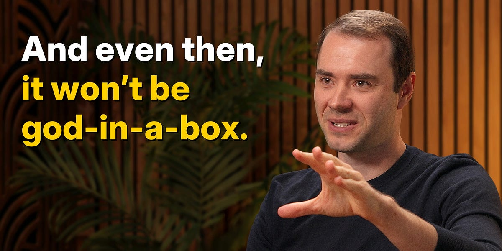

Karpathy: AGI Is Still a Decade Away

Update — May 19, 2026. Andrej Karpathy joined Anthropic seven months after this interview, working on pre-training under team lead Nick Joseph and helping launch a new team focused on using Claude to develop Anthropic’s models. He posted on X that “the next few years at the frontier of LLMs will be especially formative.” Read the Future of education chapter below with that in mind: Karpathy describes Eureka there as the place where he can “a lot more uniquely add value than an incremental improvement in the frontier lab.”
Takeaways from Andrej Karpathy’s recent chat with Dwarkesh Patel:
- He believes full-on AGI is still about a decade away, and instead of declaring this is “the year of agents”, it’s more like this is the beginning of “the decade of agents”. Don’t expect a paradigm shift overnight.
- Compare with The 2028 Global Intelligence Crisis: Scenario and Rebuttal — Citrini’s bullish two-year displacement scenario vs. Citadel Securities’ rebuttal two days later, both reading the same signal differently.
- And Sutskever at NeurIPS 2024: Pre-Training Era Is Over — the precursor “what comes next” call ten months earlier.
- He thinks today’s RL (reinforcement learning) “sucks supervision through a straw” — rewarding or punishing an entire trajectory with a single number. “You’ve done all this work only to find at the end you get a single number… it’s just stupid and crazy.”
- Karpathy says “I do see papers popping out that are trying to do this because it’s obvious to everyone in the field.” Reflexion: Language Agents with Verbal Reinforcement Learning is one of them — it converts scalar environment feedback into natural-language reflections stored in episodic memory, beating baselines without updating any weights.
- GEPA: Reflective Prompt Evolution Can Outperform Reinforcement Learning makes the same case head-to-head against an actual RL method — natural-language reflection on sampled trajectories beats GRPO by up to 20% while using 35× fewer rollouts.
- He’s skeptical about “reflective” data loops where models train on their own outputs, warning that purely synthetic self-training could collapse into low-entropy, repetitive behavior. True reflection, he notes, is still uniquely human.
- The empirical case for his skepticism: Large Language Models Cannot Self-Correct Reasoning Yet shows that without external feedback, LLMs degrade rather than improve across GSM8K, CommonSenseQA, and HotpotQA.
- The 3-paper arc that frames the debate end-to-end: Can LLMs Reliably Self-Correct Their Own Reasoning?, with the Q&A follow-up on whether it still holds for o1/R1-style reasoning models.
- And the partial counter: SCoRe — training language models to self-correct via RL shows that self-correction can be trained in, with the right reward shaping.
- He thinks coding LLMs are smart, but not yet reliable collaborators. They struggle to reason about a new codebase, or default to boilerplate when nuance matters.
- Simon Willison reaches a similar place from the practitioner side: Vibe Coding and Agentic Engineering Are Getting Closer. He’s stopped reviewing every line of code Claude Code writes, even on production systems, and the line he himself drew between the two modes is blurring.
- Two related angles on the costs of leaning on coding agents anyway: Agentic Coding Is a Trap (Lars Faye on the skill-atrophy cost of orchestrator workflows) and Where Claude Code tokens go (the token-spend cost — 73% of Claude Code spend goes to pre-prompt overhead).
https://www.dwarkesh.com/p/andrej-karpathy
YouTube chapters (jump to the enriched transcript below, or watch on YouTube):
- 0:00:00 — AGI is still a decade away (YouTube)
- 0:30:33 — LLM cognitive deficits (YouTube)
- 0:40:53 — RL is terrible (YouTube)
- 0:50:26 — How do humans learn? (YouTube)
- 1:07:13 — AGI will blend into 2% GDP growth (YouTube)
- 1:18:24 — ASI (YouTube)
- 1:33:38 — Evolution of intelligence & culture (YouTube)
- 1:43:43 — Why self driving took so long (YouTube)
- 1:57:08 — Future of education (YouTube)
Related. Sutskever made the precursor call ten months earlier at NeurIPS 2024: pre-training is over, what comes next is some mix of agents, synthetic data, and inference-time compute. Karpathy’s “decade of agents” framing is the natural follow-on.
Transcript
What’s here is the published transcript on Dwarkesh’s site, reorganized into a reader-friendly form. The dialog itself is verbatim — no words added, cut, or reworded — but five layers of editorial structure have been added on top:
- Chapter + topic outline. 9 YouTube chapters (H3 headings, each linking to its timestamp), sliced into ~70 fine-grained topic subsections (H4 headings). The H4 titles are editorial summaries of the question or thread being discussed, not verbatim speaker quotes. The full outline is in the right-hand sidebar.
- Inline hyperlinks. First mention of every salient acronym, concept, paper, product, person, or company links to the most authoritative source. Most of the existing links are from Dwarkesh’s transcript editors; I’ve added more where useful.
- Bracketed acronym expansions. Where an acronym appears for the first time without being expanded in speech, the expansion is inserted in
[square brackets](e.g.RL [reinforcement learning]) to mark the addition as editorial. - Editor’s notes in blue callout boxes flag claims worth double-checking — paper identifications Karpathy half-recalls, dates that are slightly off, or back-of-envelope numbers worth grounding.
- Numbered references. Every paper cited in the body or callouts has a
[[N]](#ref-N)cite linking to the References block at the bottom of the post.
0:00:00 — AGI is still a decade away
Why “decade of agents,” not “year of agents”
Dwarkesh Patel: Today I’m speaking with Andrej Karpathy. Andrej, why do you say that this will be the decade of agents and not the year of agents?
Andrej Karpathy: First of all, thank you for having me here. I’m excited to be here.
The quote you’ve just mentioned, “It’s the decade of agents,” is actually a reaction to a pre-existing quote. I’m not actually sure who said this but they were alluding to this being the year of agents with respect to LLMs and how they were going to evolve. I was triggered by that because there’s some over-prediction going on in the industry. In my mind, this is more accurately described as the decade of agents.
We have some very early agents that are extremely impressive and that I use daily—Claude and Codex and so on—but I still feel there’s so much work to be done. My reaction is we’ll be working with these things for a decade. They’re going to get better, and it’s going to be wonderful. I was just reacting to the timelines of the implication.
What it’ll take a decade to fix: continual learning, multimodality, computer use
Dwarkesh Patel: What do you think will take a decade to accomplish? What are the bottlenecks?
Andrej Karpathy: Actually making it work. When you’re talking about an agent, or what the labs have in mind and maybe what I have in mind as well, you should think of it almost like an employee or an intern that you would hire to work with you. For example, you work with some employees here. When would you prefer to have an agent like Claude or Codex do that work?
Currently, of course they can’t. What would it take for them to be able to do that? Why don’t you do it today? The reason you don’t do it today is because they just don’t work. They don’t have enough intelligence, they’re not multimodal enough, they can’t do computer use and all this stuff.
They don’t do a lot of the things you’ve alluded to earlier. They don’t have continual learning. You can’t just tell them something and they’ll remember it. They’re cognitively lacking and it’s just not working. It will take about a decade to work through all of those issues.
Why ten years — extrapolating from 15 years in the field
Dwarkesh Patel: Interesting. As a professional podcaster and a viewer of AI from afar, it’s easy for me to identify what’s lacking: continual learning is lacking, or multimodality is lacking. But I don’t really have a good way of trying to put a timeline on it. If somebody asks how long continual learning will take, I have no prior about whether this is a project that should take 5 years, 10 years, or 50 years. Why a decade? Why not one year? Why not 50 years?
Andrej Karpathy: This is where you get into a bit of my own intuition, and doing a bit of an extrapolation with respect to my own experience in the field. I’ve been in AI for almost two decades. It’s going to be 15 years or so, not that long. You had Richard Sutton here, who was around for much longer. I do have about 15 years of experience of people making predictions, of seeing how they turned out. Also I was in the industry for a while, I was in research, and I’ve worked in the industry for a while. I have a general intuition that I have left from that.
I feel like the problems are tractable, they’re surmountable, but they’re still difficult. If I just average it out, it just feels like a decade to me.
Three seismic shifts: deep learning, RL on games, then LLMs
Dwarkesh Patel: This is quite interesting. I want to hear not only the history, but what people in the room felt was about to happen at various different breakthrough moments. What were the ways in which their feelings were either overly pessimistic or overly optimistic? Should we just go through each of them one by one?
Andrej Karpathy: That’s a giant question because you’re talking about 15 years of stuff that happened. AI is so wonderful because there have been a number of seismic shifts where the entire field has suddenly looked a different way. I’ve maybe lived through two or three of those. I still think there will continue to be some because they come with almost surprising regularity.
When my career began, when I started to work on deep learning, when I became interested in deep learning, this was by chance of being right next to Geoff Hinton at the University of Toronto. Geoff Hinton, of course, is the godfather figure of AI. He was training all these neural networks. I thought it was incredible and interesting. This was not the main thing that everyone in AI was doing by far. This was a niche little subject on the side. That’s maybe the first dramatic seismic shift that came with the AlexNet and so on.
AlexNet reoriented everyone, and everyone started to train neural networks, but it was still very per-task, per specific task. Maybe I have an image classifier or I have a neural machine translator or something like that. People became very slowly interested in agents. People started to think, “Okay, maybe we have a check mark next to the visual cortex or something like that, but what about the other parts of the brain, and how can we get a full agent or a full entity that can interact in the world?”
The Atari deep reinforcement learning shift in 2013 [1] or so was part of that early effort of agents, in my mind, because it was an attempt to try to get agents that not just perceive the world, but also take actions and interact and get rewards from environments. At the time, this was Atari games.
I feel that was a misstep. It was a misstep that even the early OpenAI that I was a part of adopted because at that time, the zeitgeist was reinforcement learning environments, games, game playing, beat games, get lots of different types of games, and OpenAI was doing a lot of that. That was another prominent part of AI where maybe for two or three or four years, everyone was doing reinforcement learning on games. That was all a bit of a misstep.
What I was trying to do at OpenAI is I was always a bit suspicious of games as being this thing that would lead to AGI. Because in my mind, you want something like an accountant or something that’s interacting with the real world. I just didn’t see how games add up to it. My project at OpenAI, for example, was within the scope of the Universe project, on an agent that was using keyboard and mouse to operate web pages. I really wanted to have something that interacts with the actual digital world that can do knowledge work.
It just so turns out that this was extremely early, way too early, so early that we shouldn’t have been working on that. Because if you’re just stumbling your way around and keyboard mashing and mouse clicking and trying to get rewards in these environments, your reward is too sparse and you just won’t learn. You’re going to burn a forest computing, and you’re never going to get something off the ground. What you’re missing is this power of representation in the neural network.
For example, today people are training those computer-using agents, but they’re doing it on top of a large language model. You have to get the language model first, you have to get the representations first, and you have to do that by all the pre-training and all the LLM stuff.
I feel maybe loosely speaking, people kept trying to get the full thing too early a few times, where people really try to go after agents too early, I would say. That was Atari and Universe and even my own experience. You actually have to do some things first before you get to those agents. Now the agents are a lot more competent, but maybe we’re still missing some parts of that stack.
I would say those are the three major buckets of what people were doing: training neural nets per-tasks, trying the first round of agents, and then maybe the LLMs and seeking the representation power of the neural networks before you tack on everything else on top.
Editor’s note. The “Atari deep reinforcement learning shift” Karpathy refers to is Mnih et al., Playing Atari with Deep Reinforcement Learning [1] — DeepMind’s December 2013 NIPS workshop paper that demonstrated a single DQN agent learning to play seven Atari games from raw pixels. The follow-up Nature paper (Mnih et al., 2015) is what most people remember; the 2013 preprint is the one Karpathy is dating the “shift” to.
Sutton’s animals view; Karpathy’s “ghosts/spirits” view of LLMs
Dwarkesh Patel: Interesting. If I were to steelman the Sutton perspective, it would be that humans can just take on everything at once, or even animals can take on everything at once. Animals are maybe a better example because they don’t even have the scaffold of language. They just get thrown out into the world, and they just have to make sense of everything without any labels.
The vision for AGI then should just be something which looks at sensory data, looks at the computer screen, and it just figures out what’s going on from scratch. If a human were put in a similar situation and had to be trained from scratch… This is like a human growing up or an animal growing up. Why shouldn’t that be the vision for AI, rather than this thing where we’re doing millions of years of training?
Andrej Karpathy: That’s a really good question. Sutton was on your podcast and I saw the podcast and I had a write-up about that podcast that gets into a bit of how I see things. I’m very careful to make analogies to animals because they came about by a very different optimization process. Animals are evolved, and they come with a huge amount of hardware that’s built in.
For example, my example in the post was the zebra. A zebra gets born, and a few minutes later it’s running around and following its mother. That’s an extremely complicated thing to do. That’s not reinforcement learning. That’s something that’s baked in. Evolution obviously has some way of encoding the weights of our neural nets in ATCGs, and I have no idea how that works, but it apparently works.
Brains just came from a very different process, and I’m very hesitant to take inspiration from it because we’re not actually running that process. In my post, I said we’re not building animals. We’re building ghosts or spirits or whatever people want to call it, because we’re not doing training by evolution. We’re doing training by imitation of humans and the data that they’ve put on the Internet.
You end up with these ethereal spirit entities because they’re fully digital and they’re mimicking humans. It’s a different kind of intelligence. If you imagine a space of intelligences, we’re starting off at a different point almost. We’re not really building animals. But it’s also possible to make them a bit more animal-like over time, and I think we should be doing that.
One more point. I do feel Sutton has a very… His framework is, “We want to build animals.” I think that would be wonderful if we can get that to work. That would be amazing. If there were a single algorithm that you can just run on the Internet and it learns everything, that would be incredible. I’m not sure that it exists and that’s certainly not what animals do, because animals have this outer loop of evolution.
A lot of what looks like learning is more like maturation of the brain. I think there’s very little reinforcement learning for animals. A lot of the reinforcement learning is more like motor tasks; it’s not intelligence tasks. So I actually kind of think humans don’t really use RL [reinforcement learning], roughly speaking.
Dwarkesh Patel: Can you repeat the last sentence? A lot of that intelligence is not motor task…it’s what, sorry?
Andrej Karpathy: A lot of the reinforcement learning, in my perspective, would be things that are a lot more motor-like, simple tasks like throwing a hoop. But I don’t think that humans use reinforcement learning for a lot of intelligence tasks like problem-solving and so on.** **That doesn’t mean we shouldn’t do that for research, but I just feel like that’s what animals do or don’t.
Pre-training as “crappy evolution”
Dwarkesh Patel: I’m going to take a second to digest that because there are a lot of different ideas. Here’s one clarifying question I can ask to understand the perspective. You suggest that evolution is doing the kind of thing that pre-training does in the sense of building something which can then understand the world.
The difference is that evolution has to be titrated in the case of humans through three gigabytes of DNA. That’s very unlike the weights of a model. Literally, the weights of the model are a brain, which obviously does not exist in the sperm and the egg. So it has to be grown. Also, the information for every single synapse in the brain simply cannot exist in the three gigabytes that exist in the DNA.
Evolution seems closer to finding the algorithm which then does the lifetime learning. Now, maybe the lifetime learning is not analogous to RL, to your point. Is that compatible with the thing you were saying, or would you disagree with that?
Andrej Karpathy: I think so. I would agree with you that there’s some miraculous compression going on because obviously, the weights of the neural net are not stored in ATCGs. There’s some dramatic compression. There are some learning algorithms encoded that take over and do some of the learning online. I definitely agree with you on that. I would say I’m a lot more practically minded. I don’t come at it from the perspective of, let’s build animals. I come from it from the perspective of, let’s build useful things. I have a hard hat on, and I’m just observing that we’re not going to do evolution, because I don’t know how to do that.
But it does turn out we can build these ghosts, spirit-like entities, by imitating internet documents. This works. It’s a way to bring you up to something that has a lot of built-in knowledge and intelligence in some way, similar to maybe what evolution has done. That’s why I call pre-training this crappy evolution. It’s the practically possible version with our technology and what we have available to us to get to a starting point where we can do things like reinforcement learning and so on.
Knowledge vs. intelligence in pre-training; the cognitive core
Dwarkesh Patel: Just to steelman the other perspective, after doing this Sutton interview and thinking about it a bit, he has an important point here. Evolution does not give us the knowledge, really. It gives us the algorithm to find the knowledge, and that seems different from pre-training.
Perhaps the perspective is that pre-training helps build the kind of entity which can learn better. It teaches meta-learning, and therefore it is similar to finding an algorithm. But if it’s “Evolution gives us knowledge, pre-training gives us knowledge,” that analogy seems to break down.
Andrej Karpathy: It’s subtle and I think you’re right to push back on it, but basically the thing that pre-training is doing, you’re getting the next-token predictor over the internet, and you’re training that into a neural net. It’s doing two things that are unrelated. Number one, it’s picking up all this knowledge, as I call it. Number two, it’s actually becoming intelligent.
By observing the algorithmic patterns in the internet, it boots up all these little circuits and algorithms inside the neural net to do things like in-context learning and all this stuff. You don’t need or want the knowledge. I think that’s probably holding back the neural networks overall because it’s getting them to rely on the knowledge a little too much sometimes.
For example, I feel agents, one thing they’re not very good at, is going off the data manifold of what exists on the internet. If they had less knowledge or less memory, maybe they would be better. What I think we have to do going forward—and this would be part of the research paradigms—is figure out ways to remove some of the knowledge and to keep what I call this cognitive core. It’s this intelligent entity that is stripped from knowledge but contains the algorithms and contains the magic of intelligence and problem-solving and the strategies of it and all this stuff.
In-context learning as gradient descent inside attention
Dwarkesh Patel: There’s so much interesting stuff there. Let’s start with in-context learning. This is an obvious point, but I think it’s worth just saying it explicitly and meditating on it. The situation in which these models seem the most intelligent—in which I talk to them and I’m like, “Wow, there’s really something on the other end that’s responding to me thinking about things—is if it makes a mistake it’s like, “Oh wait, that’s the wrong way to think about it. I’m backing up.” All that is happening in context. That’s where I feel like the real intelligence is that you can visibly see.
That in-context learning process is developed by gradient descent on pre-training. It spontaneously meta-learns in-context learning, but the in-context learning itself is not gradient descent, in the same way that our lifetime intelligence as humans to be able to do things is conditioned by evolution but our learning during our lifetime is happening through some other process.
Andrej Karpathy: I don’t fully agree with that, but you should continue your thought.
Dwarkesh Patel: Well, I’m very curious to understand how that analogy breaks down.
Andrej Karpathy: I’m hesitant to say that in-context learning is not doing gradient descent. It’s not doing explicit gradient descent. In-context learning is pattern completion within a token window. It just turns out that there’s a huge amount of patterns on the internet. You’re right, the model learns to complete the pattern, and that’s inside the weights. The weights of the neural network are trying to discover patterns and complete the pattern. There’s some adaptation that happens inside the neural network, which is magical and just falls out from the internet just because there’s a lot of patterns.
I will say that there have been some papers that I thought were interesting that look at the mechanisms behind in-context learning. I do think it’s possible that in-context learning runs a small gradient descent loop internally in the layers of the neural network. I recall one paper in particular [2] where they were doing linear regression using in-context learning. Your inputs into the neural network are XY pairs, XY, XY, XY that happen to be on the line. Then you do X and you expect Y. The neural network, when you train it in this way, does linear regression.
Normally when you would run linear regression, you have a small gradient descent optimizer that looks at XY, looks at an error, calculates the gradient of the weights and does the update a few times. It just turns out that when they looked at the weights of that in-context learning algorithm, they found some analogies to gradient descent mechanics. In fact, I think the paper was even stronger because they hardcoded the weights of a neural network to do gradient descent through attention and all the internals of the neural network.
That’s just my only pushback. Who knows how in-context learning works, but I think that it’s probably doing a bit of some funky gradient descent internally. I think that that’s possible. I was only pushing back on your saying that it’s not doing in-context learning. Who knows what it’s doing, but it’s probably maybe doing something similar to it, but we don’t know.
Editor’s note. The paper Karpathy half-recalls (and the one the Dwarkesh transcript editors linked) is Akyürek et al., What learning algorithm is in-context learning? [2] — that paper hand-constructs transformer weights that implement linear-regression gradient descent over in-context (X, Y) pairs, exactly as Karpathy describes. A closely related result, von Oswald et al., Transformers learn in-context by gradient descent [3], makes a similar case from a different angle.
Working memory vs. hazy recollection: KV cache vs. weights
Dwarkesh Patel: So then it’s worth thinking okay, if in-context learning and pre-training are both implementing something like gradient descent, why does it feel like with in-context learning we’re getting to this continual learning, real intelligence-like thing? Whereas you don’t get the analogous feeling just from pre-training. You could argue that.
If it’s the same algorithm, what could be different? One way you could think about it is, how much information does the model store per information it receives from training? If you look at pre-training, if you look at Llama 3 for example, I think it’s trained on 15 trillion tokens. If you look at the 70B model, that would be the equivalent of 0.07 bits per token that it sees in pre-training, in terms of the information in the weights of the model compared to the tokens it reads. Whereas if you look at the KV cache [key-value cache] and how it grows per additional token in in-context learning, it’s like 320 kilobytes. So that’s a 35 million-fold difference in how much information per token is assimilated by the model. I wonder if that’s relevant at all.
Andrej Karpathy: I kind of agree. The way I usually put this is that anything that happens during the training of the neural network, the knowledge is only a hazy recollection of what happened in training time. That’s because the compression is dramatic. You’re taking 15 trillion tokens and you’re compressing it to just your final neural network of a few billion parameters. Obviously it’s a massive amount of compression going on. So I refer to it as a hazy recollection of the internet documents.
Whereas anything that happens in the context window of the neural network—you’re plugging in all the tokens and building up all those KV cache representations—is very directly accessible to the neural net. So I compare the KV cache and the stuff that happens at test time to more like a working memory. All the stuff that’s in the context window is very directly accessible to the neural net.
There’s always these almost surprising analogies between LLMs and humans. I find them surprising because we’re not trying to build a human brain directly. We’re just finding that this works and we’re doing it. But I do think that anything that’s in the weights, it’s a hazy recollection of what you read a year ago. Anything that you give it as a context at test time is directly in the working memory. That’s a very powerful analogy to think through things.
When you, for example, go to an LLM and you ask it about some book and what happened in it, like Nick Lane’s book or something like that, the LLM will often give you some stuff which is roughly correct. But if you give it the full chapter and ask it questions, you’re going to get much better results because it’s now loaded in the working memory of the model. So a very long way of saying I agree and that’s why.
Editor’s note. Dwarkesh’s KV-cache figure is roughly right for a Llama-3-class 70B model: 2 (key + value) × 80 layers × 8 grouped-query heads × 128 head-dim × 2 bytes (FP16) ≈ 320 KB per token. The 0.07 bits-per-token figure for Llama 3 70B is also a fair back-of-the-envelope: 70 × 10⁹ params × 16 bits ÷ (15 × 10¹² training tokens) ≈ 0.075 bits per token of weight-storage per training token seen.
Brain-parts analogy: cortex, prefrontal, basal ganglia, missing nuclei
Dwarkesh Patel: Stepping back, what is the part about human intelligence that we have most failed to replicate with these models?
Andrej Karpathy: Just a lot of it. So maybe one way to think about it, I don’t know if this is the best way, but I almost feel like — again, making these analogies imperfect as they are — we’ve stumbled by with the transformer neural network, which is extremely powerful, very general. You can train transformers on audio, or video, or text, or whatever you want, and it just learns patterns and they’re very powerful, and it works really well. That to me almost indicates that this is some piece of cortical tissue. It’s something like that, because the cortex is famously very plastic as well. You can rewire parts of brains. There were the slightly gruesome experiments with rewiring the visual cortex to the auditory cortex, and this animal learned fine, et cetera.
So I think that this is cortical tissue. I think when we’re doing reasoning and planning inside the neural networks, doing reasoning traces for thinking models, that’s kind of like the prefrontal cortex. Maybe those are like little checkmarks, but I still think there are many brain parts and nuclei that are not explored. For example, there’s a basal ganglia doing a bit of reinforcement learning when we fine-tune the models on reinforcement learning. But where’s the hippocampus? Not obvious what that would be. Some parts are probably not important. Maybe the cerebellum is not important to cognition, its thoughts, so maybe we can skip some of it. But I still think there’s, for example, the amygdala, all the emotions and instincts. There’s probably a bunch of other nuclei in the brain that are very ancient that I don’t think we’ve really replicated.
I don’t know that we should be pursuing the building of an analog of a human brain. I’m an engineer mostly at heart. Maybe another way to answer the question is that you’re not going to hire this thing as an intern. It’s missing a lot of it because it comes with a lot of these cognitive deficits that we all intuitively feel when we talk to the models. So it’s not fully there yet. You can look at it as not all the brain parts are checked off yet.
Continual learning and the missing sleep/distillation phase
Dwarkesh Patel: This is maybe relevant to the question of thinking about how fast these issues will be solved. Sometimes people will say about continual learning, “Look, you could easily replicate this capability. Just as in-context learning emerged spontaneously as a result of pre-training, continual learning over longer horizons will emerge spontaneously if the model is incentivized to recollect information over longer horizons, or horizons longer than one session.” So if there’s some outer loop RL which has many sessions within that outer loop, then this continual learning where it fine-tunes itself, or it writes to an external memory or something, will just emerge spontaneously. Do you think things like that are plausible? I just don’t have a prior over how plausible that is. How likely is that to happen?
Andrej Karpathy: I don’t know that I fully resonate with that. These models, when you boot them up and they have zero tokens in the window, they’re always restarting from scratch where they were. So I don’t know in that worldview what it looks like. Maybe making some analogies to humans—just because I think it’s roughly concrete and interesting to think through—I feel like when I’m awake, I’m building up a context window of stuff that’s happening during the day. But when I go to sleep, something magical happens where I don’t think that context window stays around. There’s some process of distillation into the weights of my brain. This happens during sleep and all this stuff.
We don’t have an equivalent of that in large language models. That’s to me more adjacent to when you talk about continual learning and so on as absent. These models don’t really have a distillation phase of taking what happened, analyzing it obsessively, thinking through it, doing some synthetic data generation process and distilling it back into the weights, and maybe having a specific neural net per person. Maybe it’s a LoRA. It’s not a full-weight neural network. It’s just some small sparse subset of the weights that are changed.
But we do want to create ways of creating these individuals that have very long context. It’s not only remaining in the context window because the context windows grow very, very long. Maybe we have some very elaborate, sparse attention over it. But I still think that humans obviously have some process for distilling some of that knowledge into the weights. We’re missing it. I do also think that humans have some very elaborate, sparse attention scheme, which I think we’re starting to see some early hints of. DeepSeek v3.2 just came out and I saw that they have sparse attention as an example, and this is one way to have very, very long context windows. So I feel like we are redoing a lot of the cognitive tricks that evolution came up with through a very different process. But we’re going to converge on a similar architecture cognitively.
Ten-year extrapolation: replicating LeCun 1989, halving error 33 years later
Dwarkesh Patel: In 10 years, do you think it’ll still be something like a transformer, but with much more modified attention and more sparse MLPs and so forth?
Andrej Karpathy: The way I like to think about it is translation invariance in time. So 10 years ago, where were we? 2015. In 2015, we had convolutional neural networks primarily, residual networks just came out. So remarkably similar, I guess, but quite a bit different still. The transformer was not around. All these more modern tweaks on the transformer were not around. Maybe some of the things that we can bet on, I think in 10 years by translational equivariance, is that we’re still training giant neural networks with a forward backward pass and update through gradient descent, but maybe it looks a bit different, and it’s just that everything is much bigger.
Recently I went back all the way to 1989 which was a fun exercise for me, a few years ago, because I was reproducing Yann LeCun’s 1989 convolutional network [4], which was the first neural network I’m aware of trained via gradient descent, like modern neural network trained gradient descent on digit recognition. I was just interested in how I could modernize this. How much of this is algorithms? How much of this is data? How much of this progress is compute and systems? I was able to very quickly halve the learning just by time traveling by 33 years.
So if I time travel by algorithms 33 years, I could adjust what Yann LeCun did in 1989, and I could halve the error. But to get further gains, I had to add a lot more data, I had to 10x the training set, and then I had to add more computational optimizations. I had to train for much longer with dropout and other regularization techniques.
So all these things have to improve simultaneously. We’re probably going to have a lot more data, we’re probably going to have a lot better hardware, probably going to have a lot better kernels and software, we’re probably going to have better algorithms. All of those, it’s almost like no one of them is winning too much. All of them are surprisingly equal. This has been the trend for a while.
So to answer your question, I expect differences algorithmically to what’s happening today. But I do also expect that some of the things that have stuck around for a very long time will probably still be there. It’s probably still a giant neural network trained with gradient descent. That would be my guess.
Editor’s note. The 1989 paper Karpathy reproduced is LeCun et al., Backpropagation Applied to Handwritten Zip Code Recognition [4] (Neural Computation, 1989) — not LeNet (1998), and not the closely related but distinct NeurIPS 1989 paper “Handwritten Digit Recognition with a Back-Propagation Network”. Karpathy’s write-up of the reproduction is at karpathy.github.io/2022/03/14/lecun1989/ — the Dwarkesh transcript originally linked the NeurIPS paper, which I’ve corrected here to match the paper Karpathy actually reproduced.
Dwarkesh Patel: It’s surprising that all of those things together only halved the error, 30 years of progress…. Maybe half is a lot. Because if you halve the error, that actually means that…
Andrej Karpathy: Half is a lot. But I guess what was shocking to me is everything needs to improve across the board: architecture, optimizer, loss function. It also has improved across the board forever. So I expect all those changes to be alive and well.
Building nanochat — every step in fresh RAM
Dwarkesh Patel: Yeah. I was about to ask you a very similar question about nanochat. Since you just coded it up recently, every single step in the process of building a chatbot is fresh in your RAM. I’m curious if you had similar thoughts about, “Oh, there was no one thing that was relevant to going from GPT-2 to nanochat.” What are some surprising takeaways from the experience?
Andrej Karpathy: Of building nanochat? So nanochat is a repository I released. Was it yesterday or the day before? I can’t remember.
Dwarkesh Patel: We can see the sleep deprivation that went into the…
Andrej Karpathy: It’s trying to be the simplest complete repository that covers the whole pipeline end-to-end of building a ChatGPT clone. So you have all of the steps, not just any individual step, which is a bunch. I worked on all the individual steps in the past and released small pieces of code that show you how that’s done in an algorithmic sense, in simple code. But this handles the entire pipeline. In terms of learning, I don’t know that I necessarily found something that I learned from it. I already had in my mind how you build it. This is just the process of mechanically building it and making it clean enough so that people can learn from it and that they find it useful.
How to learn from nanochat: build it from scratch, no copy-paste
Dwarkesh Patel: What is the best way for somebody to learn from it? Is it to just delete all the code and try to reimplement from scratch, try to add modifications to it?
Andrej Karpathy: That’s a great question. Basically it’s about 8,000 lines of code that takes you through the entire pipeline. I would probably put it on the right monitor. If you have two monitors, you put it on the right. You want to build it from scratch, you build it from the start. You’re not allowed to copy-paste, you’re allowed to reference, you’re not allowed to copy-paste. Maybe that’s how I would do it.
But I also think the repository by itself is a pretty large beast. When you write this code, you don’t go from top to bottom, you go from chunks and you grow the chunks, and that information is absent. You wouldn’t know where to start. So it’s not just a final repository that’s needed, it’s the building of the repository, which is a complicated chunk-growing process. So that part is not there yet. I would love to add that probably later this week. It’s probably a video or something like that. Roughly speaking, that’s what I would try to do. Build the stuff yourself, but don’t allow yourself copy-paste.
I do think that there’s two types of knowledge, almost. There’s the high-level surface knowledge, but when you build something from scratch, you’re forced to come to terms with what you don’t understand and you don’t know that you don’t understand it.
It always leads to a deeper understanding. It’s the only way to build. If I can’t build it, I don’t understand it. That’s a Feynman quote, I believe. I 100% have always believed this very strongly, because there are all these micro things that are just not properly arranged and you don’t really have the knowledge. You just think you have the knowledge. So don’t write blog posts, don’t do slides, don’t do any of that. Build the code, arrange it, get it to work. It’s the only way to go. Otherwise, you’re missing knowledge.
0:30:33 — LLM cognitive deficits
Three modes of code interaction: scratch, autocomplete, vibe coding
Dwarkesh Patel: You tweeted out that coding models were of very little help to you in assembling this repository. I’m curious why that was.
Andrej Karpathy: I guess I built the repository over a period of a bit more than a month. I would say there are three major classes of how people interact with code right now. Some people completely reject all of LLMs and they are just writing by scratch. This is probably not the right thing to do anymore.
The intermediate part, which is where I am, is you still write a lot of things from scratch, but you use the autocomplete that’s available now from these models. So when you start writing out a little piece of it, it will autocomplete for you and you can just tap through. Most of the time it’s correct, sometimes it’s not, and you edit it. But you’re still very much the architect of what you’re writing. Then there’s the vibe coding: “Hi, please implement this or that,” enter, and then let the model do it. That’s the agents.
I do feel like the agents work in very specific settings, and I would use them in specific settings. But these are all tools available to you and you have to learn what they’re good at, what they’re not good at, and when to use them. So the agents are pretty good, for example, if you’re doing boilerplate stuff. Boilerplate code that’s just copy-paste stuff, they’re very good at that. They’re very good at stuff that occurs very often on the Internet because there are lots of examples of it in the training sets of these models. There are features of things where the models will do very well.
I would say nanochat is not an example of those because it’s a fairly unique repository. There’s not that much code in the way that I’ve structured it. It’s not boilerplate code. It’s intellectually intense code almost, and everything has to be very precisely arranged. The models have so many cognitive deficits. One example, they kept misunderstanding the code because they have too much memory from all the typical ways of doing things on the Internet that I just wasn’t adopting. The models, for example—I don’t know if I want to get into the full details—but they kept thinking I’m writing normal code, and I’m not.
Dwarkesh Patel: Maybe one example?
Andrej Karpathy: You have eight GPUs [graphics processing units] that are all doing forward, backwards. The way to synchronize gradients between them is to use a Distributed Data Parallel container of PyTorch, which automatically as you’re doing the backward, it will start communicating and synchronizing gradients. I didn’t use DDP because I didn’t want to use it, because it’s not necessary. I threw it out and wrote my own synchronization routine that’s inside the step of the optimizer. The models were trying to get me to use the DDP container. They were very concerned. This gets way too technical, but I wasn’t using that container because I don’t need it and I have a custom implementation of something like it.
Bloated try/catches, deprecated APIs — defensive code that fights you
Dwarkesh Patel: They just couldn’t internalize that you had your own.
Andrej Karpathy: They couldn’t get past that. They kept trying to mess up the style. They’re way too over-defensive. They make all these try-catch statements. They keep trying to make a production code base, and I have a bunch of assumptions in my code, and it’s okay. I don’t need all this extra stuff in there. So I feel like they’re bloating the code base, bloating the complexity, they keep misunderstanding, they’re using deprecated APIs a bunch of times. It’s a total mess. It’s just not net useful. I can go in, I can clean it up, but it’s not net useful.
I also feel like it’s annoying to have to type out what I want in English because it’s too much typing. If I just navigate to the part of the code that I want, and I go where I know the code has to appear and I start typing out the first few letters, autocomplete gets it and just gives you the code. This is a very high information bandwidth to specify what you want. You point to the code where you want it, you type out the first few pieces, and the model will complete it.
So what I mean is, these models are good in certain parts of the stack. There are two examples where I use the models that I think are illustrative. One was when I generated the report. That’s more boilerplate-y, so I partially vibe-coded some of that stuff. That was fine because it’s not mission-critical stuff, and it works fine.
The other part is when I was rewriting the tokenizer in Rust. I’m not as good at Rust because I’m fairly new to Rust. So there’s a bit of vibe coding going on when I was writing some of the Rust code. But I had a Python implementation that I fully understand, and I’m just making sure I’m making a more efficient version of it, and I have tests so I feel safer doing that stuff. They increase accessibility to languages or paradigms that you might not be as familiar with. I think they’re very helpful there as well. There’s a ton of Rust code out there, the models are pretty good at it. I happen to not know that much about it, so the models are very useful there.
Why this matters for the AI 2027 self-improvement narrative
Dwarkesh Patel: The reason this question is so interesting is because the main story people have about AI exploding and getting to superintelligence pretty rapidly is AI automating AI engineering and AI research. They’ll look at the fact that you can have Claude Code and make entire applications, CRUD [create-read-update-delete] applications, from scratch and think, “If you had this same capability inside of OpenAI and DeepMind and everything, just imagine a thousand of you or a million of you in parallel, finding little architectural tweaks.”
It’s quite interesting to hear you say that this is the thing they’re asymmetrically worse at. It’s quite relevant to forecasting whether the AI 2027-type explosion is likely to happen anytime soon.
Andrej Karpathy: That’s a good way of putting it, and you’re getting at why my timelines are a bit longer. You’re right. They’re not very good at code that has never been written before, maybe it’s one way to put it, which is what we’re trying to achieve when we’re building these models.
GPT-5 Pro as oracle; the industry’s “slop” overpromise
Dwarkesh Patel: Very naive question, but the architectural tweaks that you’re adding to nanochat, they’re in a paper somewhere, right? They might even be in a repo somewhere. Is it surprising that they aren’t able to integrate that into whenever you’re like, “Add RoPE embeddings” or something, they do that in the wrong way?
Andrej Karpathy: It’s tough. They know, but they don’t fully know. They don’t know how to fully integrate it into the repo and your style and your code and your place, and some of the custom things that you’re doing and how it fits with all the assumptions of the repository. They do have some knowledge, but they haven’t gotten to the place where they can integrate it and make sense of it.
A lot of the stuff continues to improve. Currently, the state-of-the-art model that I go to is the GPT-5 Pro, and that’s a very powerful model. If I have 20 minutes, I will copy-paste my entire repo and I go to GPT-5 Pro, the oracle, for some questions. Often it’s not too bad and surprisingly good compared to what existed a year ago.
Overall, the models are not there. I feel like the industry is making too big of a jump and is trying to pretend like this is amazing, and it’s not. It’s slop. They’re not coming to terms with it, and maybe they’re trying to fundraise or something like that. I’m not sure what’s going on, but we’re at this intermediate stage. The models are amazing. They still need a lot of work. For now, autocomplete is my sweet spot. But sometimes, for some types of code, I will go to an LLM agent.
AI as a continuum of computing — the autonomy slider
Dwarkesh Patel: Here’s another reason this is really interesting. Through the history of programming, there have been many productivity improvements—compilers, linting, better programming languages—which have increased programmer productivity but have not led to an explosion. That sounds very much like the autocomplete tab, and this other category is just automation of the programmer. It’s interesting you’re seeing more in the category of the historical analogies of better compilers or something.
Andrej Karpathy: Maybe this gets to one other thought. I have a hard time differentiating where AI begins and stops because I see AI as fundamentally an extension of computing in a pretty fundamental way. I see a continuum of this recursive self-improvement or speeding up programmers all the way from the beginning: code editors, syntax highlighting, or checking even of the types, like data type checking—all these tools that we’ve built for each other.
Even search engines. Why aren’t search engines part of AI? Ranking is AI. At some point, Google, even early on, was thinking of themselves as an AI company doing Google Search engine, which is totally fair.
I see it as a lot more of a continuum than other people do, and it’s hard for me to draw the line. I feel like we’re now getting a much better autocomplete, and now we’re also getting some agents which are these loopy things, but they go off-rails sometimes. What’s going on is that the human is progressively doing a bit less and less of the low-level stuff. We’re not writing the assembly code because we have compilers. Compilers will take my high-level language in C and write the assembly code.
We’re abstracting ourselves very, very slowly. There’s this what I call “autonomy slider,” where more and more stuff is automated—of the stuff that can be automated at any point in time—and we’re doing a bit less and less and raising ourselves in the layer of abstraction over the automation.
0:40:53 — RL is terrible
Sucking supervision through a straw
Dwarkesh Patel: Let’s talk about RL a bit. You tweeted some very interesting things about this. Conceptually, how should we think about the way that humans are able to build a rich world model just from interacting with our environment, and in ways that seem almost irrespective of the final reward at the end of the episode?
If somebody is starting a business, and at the end of 10 years, she finds out whether the business succeeded or failed, we say that she’s earned a bunch of wisdom and experience. But it’s not because the log probs of every single thing that happened over the last 10 years are up-weighted or down-weighted. Something much more deliberate and rich is happening. What is the ML [machine learning] analogy, and how does that compare to what we’re doing with LLMs right now?
Andrej Karpathy: Maybe the way I would put it is that humans don’t use reinforcement learning, as I said. I think they do something different. Reinforcement learning is a lot worse than I think the average person thinks. Reinforcement learning is terrible. It just so happens that everything that we had before it is much worse because previously we were just imitating people, so it has all these issues.
In reinforcement learning, say you’re solving a math problem, because it’s very simple. You’re given a math problem and you’re trying to find the solution. In reinforcement learning, you will try lots of things in parallel first. You’re given a problem, you try hundreds of different attempts. These attempts can be complex. They can be like, “Oh, let me try this, let me try that, this didn’t work, that didn’t work,” etc. Then maybe you get an answer. Now you check the back of the book and you see, “Okay, the correct answer is this.” You can see that this one, this one, and that one got the correct answer, but these other 97 of them didn’t. Literally what reinforcement learning does is it goes to the ones that worked really well and every single thing you did along the way, every single token gets upweighted like, “Do more of this.”
The problem with that is people will say that your estimator has high variance, but it’s just noisy. It’s noisy. It almost assumes that every single little piece of the solution that you made that arrived at the right answer was the correct thing to do, which is not true. You may have gone down the wrong alleys until you arrived at the right solution. Every single one of those incorrect things you did, as long as you got to the correct solution, will be upweighted as, “Do more of this.” It’s terrible. It’s noise.
You’ve done all this work only to find, at the end, you get a single number of like, “Oh, you did correct.” Based on that, you weigh that entire trajectory as like, upweight or downweight. The way I like to put it is you’re sucking supervision through a straw. You’ve done all this work that could be a minute of rollout, and you’re sucking the bits of supervision of the final reward signal through a straw and you’re broadcasting that across the entire trajectory and using that to upweight or downweight that trajectory. It’s just stupid and crazy.
A human would never do this. Number one, a human would never do hundreds of rollouts. Number two, when a person finds a solution, they will have a pretty complicated process of review of, “Okay, I think these parts I did well, these parts I did not do that well. I should probably do this or that.” They think through things. There’s nothing in current LLMs that does this. There’s no equivalent of it. But I do see papers popping out that are trying to do this because it’s obvious to everyone in the field.
The first imitation learning, by the way, was extremely surprising and miraculous and amazing, that we can fine-tune by imitation on humans. That was incredible. Because in the beginning, all we had was base models. Base models are autocomplete. It wasn’t obvious to me at the time, and I had to learn this. The paper that blew my mind [5] was InstructGPT, because it pointed out that you can take the pretrained model, which is autocomplete, and if you just fine-tune it on text that looks like conversations, the model will very rapidly adapt to become very conversational, and it keeps all the knowledge from pre-training. This blew my mind because I didn’t understand that stylistically, it can adjust so quickly and become an assistant to a user through just a few loops of fine-tuning on that kind of data. It was very miraculous to me that that worked. So incredible. That was two to three years of work.
Now came RL. And RL allows you to do a bit better than just imitation learning because you can have these reward functions and you can hill-climb on the reward functions. Some problems have just correct answers, you can hill-climb on that without getting expert trajectories to imitate. So that’s amazing. The model can also discover solutions that a human might never come up with. This is incredible. Yet, it’s still stupid.
We need more. I saw a paper from Google yesterday that tried to have this reflect & review idea in mind. Was it the memory bank paper [6] or something? I don’t know. I’ve seen a few papers along these lines. So I expect there to be some major update to how we do algorithms for LLMs coming in that realm. I think we need three or four or five more, something like that.
Editor’s note. The InstructGPT paper Karpathy says “blew his mind” is Ouyang et al., 2022 [5]. The memory-bank-style follow-on he gestures at next is most likely Ouyang et al., ReasoningBank: Scaling Agent Self-Evolving with Reasoning Memory [6] — a Google paper from September 29, 2025 (the day before this interview) that distills strategies from an LLM agent’s past interactions into a reusable “reasoning memory.”
Why process supervision is hard: LLM judges get gamed
Dwarkesh Patel: You’re so good at coming up with evocative phrases. “Sucking supervision through a straw.” It’s so good.
You’re saying the problem with outcome-based reward is that you have this huge trajectory, and then at the end, you’re trying to learn every single possible thing about what you should do and what you should learn about the world from that one final bit. Given the fact that this is obvious, why hasn’t process-based supervision as an alternative been a successful way to make models more capable? What has been preventing us from using this alternative paradigm?
The “dhdhdhdh” adversarial-example anecdote
Andrej Karpathy: Process-based supervision just refers to the fact that we’re not going to have a reward function only at the very end. After you’ve done 10 minutes of work, I’m not going to tell you you did well or not well. I’m going to tell you at every single step of the way how well you’re doing. The reason we don’t have that is it’s tricky how you do that properly. You have partial solutions and you don’t know how to assign credit. So when you get the right answer, it’s just an equality match to the answer. It’s very simple to implement. If you’re doing process supervision, how do you assign in an automatable way, a partial credit assignment? It’s not obvious how you do it.
Lots of labs are trying to do it with these LLM judges. You get LLMs to try to do it. You prompt an LLM, “Hey, look at a partial solution of a student. How well do you think they’re doing if the answer is this?” and they try to tune the prompt.
The reason that this is tricky is quite subtle. It’s the fact that anytime you use an LLM to assign a reward, those LLMs are giant things with billions of parameters, and they’re gameable. If you’re reinforcement learning with respect to them, you will find adversarial examples for your LLM judges, almost guaranteed. So you can’t do this for too long. You do maybe 10 steps or 20 steps, and maybe it will work, but you can’t do 100 or 1,000. I understand it’s not obvious, but basically the model will find little cracks. It will find all these spurious things in the nooks and crannies of the giant model and find a way to cheat it.
One example that’s prominently in my mind, this was probably public, if you’re using an LLM judge for a reward, you just give it a solution from a student and ask it if the student did well or not. We were training with reinforcement learning against that reward function, and it worked really well. Then, suddenly, the reward became extremely large. It was a massive jump, and it did perfect. You’re looking at it like, “Wow, this means the student is perfect in all these problems. It’s fully solved math.”
But when you look at the completions that you’re getting from the model, they are complete nonsense. They start out okay, and then they change to “dhdhdhdh.” It’s just like, “Oh, okay, let’s take two plus three and we do this and this, and then dhdhdhdh.” You’re looking at it, and it’s like, this is crazy. How is it getting a reward of one or 100%? You look at the LLM judge, and it turns out that “dhdhdhdh” is an adversarial example for the model, and it assigns 100% probability to it.
It’s just because this is an out-of-sample example to the LLM. It’s never seen it during training, and you’re in pure generalization land. It’s never seen it during training, and in the pure generalization land, you can find these examples that break it.
Dwarkesh Patel: You’re basically training the LLM to be a prompt injection model.
Andrej Karpathy: Not even that. Prompt injection is way too fancy. You’re finding adversarial examples, as they’re called. These are nonsensical solutions that are obviously wrong, but the model thinks they are amazing.
Iterating LLM judges vs. infinity of adversarial examples
Dwarkesh Patel: To the extent you think this is the bottleneck to making RL more functional, then that will require making LLMs better judges, if you want to do this in an automated way. Is it just going to be some sort of GAN [generative adversarial network]-like approach where you have to train models to be more robust?
Andrej Karpathy: The labs are probably doing all that. The obvious thing is, “dhdhdhdh” should not get 100% reward. Okay, well, take “dhdhdhdh,” put it in the training set of the LLM judge, and say this is not 100%, this is 0%. You can do this, but every time you do this, you get a new LLM, and it still has adversarial examples. There’s an infinity of adversarial examples.
Probably if you iterate this a few times, it’ll probably be harder and harder to find adversarial examples, but I’m not 100% sure because this thing has a trillion parameters or whatnot. I bet you the labs are trying. I still think we need other ideas.
Reflect-and-review as the next algorithmic update
Dwarkesh Patel: Interesting. Do you have some shape of what the other idea could be?
Andrej Karpathy: This idea of a review solution encompassing synthetic examples such that when you train on them, you get better, and meta-learn it in some way. I think there are some papers that I’m starting to see pop out. I am only at a stage of reading abstracts because a lot of these papers are just ideas. Someone has to make it work on a frontier LLM lab scale in full generality because when you see these papers, they pop up, and it’s just a bit noisy. They’re cool ideas, but I haven’t seen anyone convincingly show that this is possible. That said, the LLM labs are fairly closed, so who knows what they’re doing now.
0:50:26 — How do humans learn?
Books as prompts, not as tokens to predict
Dwarkesh Patel: I can conceptualize how you would be able to train on synthetic examples or synthetic problems that you have made for yourself. But there seems to be another thing humans do—maybe sleep is this, maybe daydreaming is this—which is not necessarily to come up with fake problems, but just to reflect.
I’m not sure what the ML analogy is for daydreaming or sleeping, or just reflecting. I haven’t come up with a new problem. Obviously, the very basic analogy would just be fine-tuning on reflection bits, but I feel like in practice that probably wouldn’t work that well. Do you have some take on what the analogy of this thing is?
Silently collapsed distributions: ChatGPT only knows three jokes
Andrej Karpathy: I do think that we’re missing some aspects there. As an example, let’s take reading a book. Currently when LLMs are reading a book, what that means is we stretch out the sequence of text, and the model is predicting the next token, and it’s getting some knowledge from that. That’s not really what humans do. When you’re reading a book, I don’t even feel like the book is exposition I’m supposed to be attending to and training on. The book is a set of prompts for me to do synthetic data generation, or for you to get to a book club and talk about it with your friends. It’s by manipulating that information that you actually gain that knowledge. We have no equivalent of that with LLMs. They don’t really do that. I’d love to see during pre-training some stage that thinks through the material and tries to reconcile it with what it already knows, and thinks through it for some amount of time and gets that to work. There’s no equivalence of any of this. This is all research.
There are some subtle—very subtle that I think are very hard to understand—reasons why it’s not trivial. If I can just describe one: why can’t we just synthetically generate and train on it? Because every synthetic example, if I just give synthetic generation of the model thinking about a book, you look at it and you’re like, “This looks great. Why can’t I train on it?” You could try, but the model will get much worse if you continue trying. That’s because all of the samples you get from models are silently collapsed. Silently—it is not obvious if you look at any individual example of it—they occupy a very tiny manifold of the possible space of thoughts about content. The LLMs, when they come off, they’re what we call “collapsed.” They have a collapsed data distribution. One easy way to see it is to go to ChatGPT and ask it, “Tell me a joke.” It only has like three jokes. It’s not giving you the whole breadth of possible jokes. It knows like three jokes. They’re silently collapsed.
You’re not getting the richness and the diversity and the entropy from these models as you would get from humans. Humans are a lot noisier, but at least they’re not biased, in a statistical sense. They’re not silently collapsed. They maintain a huge amount of entropy. So how do you get synthetic data generation to work despite the collapse and while maintaining the entropy? That’s a research problem.
Dwarkesh Patel: Just to make sure I understood, the reason that the collapse is relevant to synthetic data generation is because you want to be able to come up with synthetic problems or reflections which are not already in your data distribution?
Andrej Karpathy: I guess what I’m saying is, say we have a chapter of a book and I ask an LLM to think about it, it will give you something that looks very reasonable. But if I ask it 10 times, you’ll notice that all of them are the same.
Dwarkesh Patel: You can’t just keep scaling “reflection” on the same amount of prompt information and then get returns from that.
Humans collapse over a lifetime; entropy from talking to others
Andrej Karpathy: Any individual sample will look okay, but the distribution of it is quite terrible. It’s quite terrible in such a way that if you continue training on too much of your own stuff, you actually collapse.
I think that there’s possibly no fundamental solution to this. I also think humans collapse over time. These analogies are surprisingly good. Humans collapse during the course of their lives. This is why children, they haven’t overfit yet. They will say stuff that will shock you because you can see where they’re coming from, but it’s just not the thing people say, because they’re not yet collapsed. But we’re collapsed. We end up revisiting the same thoughts. We end up saying more and more of the same stuff, and the learning rates go down, and the collapse continues to get worse, and then everything deteriorates.
Dreaming as anti-overfitting
Dwarkesh Patel: Have you seen this super interesting paper that dreaming is a way of preventing this [7] kind of overfitting and collapse? The reason dreaming is evolutionary adaptive is to put you in weird situations that are very unlike your day-to-day reality, so as to prevent this kind of overfitting.
Andrej Karpathy: It’s an interesting idea. I do think that when you’re generating things in your head and then you’re attending to it, you’re training on your own samples, you’re training on your synthetic data. If you do it for too long, you go off-rails and you collapse way too much. You always have to seek entropy in your life. Talking to other people is a great source of entropy, and things like that. So maybe the brain has also built some internal mechanisms for increasing the amount of entropy in that process. That’s an interesting idea.
Children: bad memory, great learners
Dwarkesh Patel: This is a very ill-formed thought so I’ll just put it out and let you react to it. The best learners that we are aware of, which are children, are extremely bad at recollecting information. In fact, at the very earliest stages of childhood, you will forget everything. You’re just an amnesiac about everything that happens before a certain year date. But you’re extremely good at picking up new languages and learning from the world. Maybe there’s some element of being able to see the forest for the trees.
Whereas if you compare it to the opposite end of the spectrum, you have LLM pre-training, where these models will literally be able to regurgitate word-for-word what is the next thing in a Wikipedia page. But their ability to learn abstract concepts really quickly, the way a child can, is much more limited. Then adults are somewhere in between, where they don’t have the flexibility of childhood learning, but they can memorize facts and information in a way that is harder for kids. I don’t know if there’s something interesting about that spectrum.
Andrej Karpathy: I think there’s something very interesting about that, 100%. I do think that humans have a lot more of an element, compared to LLMs, of seeing the forest for the trees. We’re not actually that good at memorization, which is actually a feature. Because we’re not that good at memorization, we’re forced to find patterns in a more general sense.
LLMs in comparison are extremely good at memorization. They will recite passages from all these training sources. You can give them completely nonsensical data. You can hash some amount of text or something like that, you get a completely random sequence. If you train on it, even just for a single iteration or two, it can suddenly regurgitate the entire thing. It will memorize it. There’s no way a person can read a single sequence of random numbers and recite it to you.
That’s a feature, not a bug, because it forces you to only learn the generalizable components. Whereas LLMs are distracted by all the memory that they have of the pre-training documents, and it’s probably very distracting to them in a certain sense. So that’s why when I talk about the cognitive core, I want to remove the memory, which is what we talked about. I’d love to have them have less memory so that they have to look things up, and they only maintain the algorithms for thought, and the idea of an experiment, and all this cognitive glue of acting.
Dwarkesh Patel: And this is also relevant to preventing model collapse?
Andrej Karpathy: Let me think. I’m not sure. It’s almost like a separate axis. The models are way too good at memorization, and somehow we should remove that. People are much worse, but it’s a good thing.
Why naive entropy regularization doesn’t fix collapse
Dwarkesh Patel: What is a solution to model collapse? There are very naive things you could attempt. The distribution over logits should be wider or something. There are many naive things you could try. What ends up being the problem with the naive approaches?
Andrej Karpathy: That’s a great question. You can imagine having a regularization for entropy and things like that. I guess they just don’t work as well empirically because right now the models are collapsed. But I will say most of the tasks that we want from them don’t actually demand diversity. That’s probably the answer to what’s going on.
The frontier labs are trying to make the models useful. I feel like the diversity of the outputs is not so much… Number one, it’s much harder to work with and evaluate and all this stuff, but maybe it’s not what’s capturing most of the value.
Dwarkesh Patel: In fact, it’s actively penalized. If you’re super creative in RL, it’s not good.
Andrej Karpathy: Yeah. Or maybe if you’re doing a lot of writing, help from LLMs and stuff like that, it’s probably bad because the models will silently give you all the same stuff. They won’t explore lots of different ways of answering a question.
Maybe this diversity, not as many applications need it so the models don’t have it. But then it’s a problem at synthetic data generation time, et cetera. So we’re shooting ourselves in the foot by not allowing this entropy to maintain in the model. Possibly the labs should try harder.
Diversity vs. drift: controlling the distribution is tricky
Dwarkesh Patel: I think you hinted that it’s a very fundamental problem, it won’t be easy to solve. What’s your intuition for that?
Andrej Karpathy: I don’t know if it’s super fundamental. I don’t know if I intended to say that. I do think that I haven’t done these experiments, but I do think that you could probably regularize the entropy to be higher. So you’re encouraging the model to give you more and more solutions, but you don’t want it to start deviating too much from the training data. It’s going to start making up its own language. It’s going to start using words that are extremely rare, so it’s going to drift too much from the distribution.
So I think controlling the distribution is just tricky. It’s probably not trivial in that sense.
How big should the cognitive core be? Karpathy says ~1B parameters
Dwarkesh Patel: How many bits should the optimal core of intelligence end up being if you just had to make a guess? The thing we put on the von Neumann probes, how big does it have to be?
Andrej Karpathy: It’s really interesting in the history of the field because at one point everything was very scaling-pilled in terms of like, “Oh, we’re gonna make much bigger models, trillions of parameter models.” What the models have done in size is they’ve gone up and now they’ve come down. State-of-the-art models are smaller. Even then, I think they memorized way too much. So I had a prediction a while back that I almost feel like we can get cognitive cores that are very good at even a billion parameters.
If you talk to a billion parameter model, I think in 20 years, you can have a very productive conversation. It thinks and it’s a lot more like a human. But if you ask it some factual question, it might have to look it up, but it knows that it doesn’t know and it might have to look it up and it will just do all the reasonable things.
Dwarkesh Patel: That’s surprising that you think it’ll take a billion parameters. Because already we have billion parameter models or a couple billion parameter models that are very intelligent.
Andrej Karpathy: Well, state-of-the-art models are like a trillion parameters. But they remember so much stuff.
Why distilled models can’t go arbitrarily small
Dwarkesh Patel: Yeah, but I’m surprised that in 10 years, given the pace… We have gpt-oss-20b. That’s way better than GPT-4 original, which was a trillion plus parameters. Given that trend, I’m surprised you think in 10 years the cognitive core is still a billion parameters. I’m surprised you’re not like, “Oh it’s gonna be like tens of millions or millions.”
Andrej Karpathy: Here’s the issue, the training data is the internet, which is really terrible. There’s a huge amount of gains to be made because the internet is terrible. Even the internet, when you and I think of the internet, you’re thinking of like The Wall Street Journal. That’s not what this is. When you’re looking at a pre-training dataset in the frontier lab and you look at a random internet document, it’s total garbage. I don’t even know how this works at all. It’s some like stock tickers, symbols, it’s a huge amount of slop and garbage from like all the corners of the internet. It’s not like your Wall Street Journal article, that’s extremely rare. So because the internet is so terrible, we have to build really big models to compress all that. Most of that compression is memory work instead of cognitive work.
But what we really want is the cognitive part, delete the memory. I guess what I’m saying is that we need intelligent models to help us refine even the pre-training set to just narrow it down to the cognitive components. Then I think you get away with a much smaller model because it’s a much better dataset and you could train it on it. But probably it’s not trained directly on it, it’s probably distilled from a much better model still.
Dwarkesh Patel: But why is the distilled version still a billion?
Andrej Karpathy: I just feel like distillation works extremely well. So almost every small model, if you have a small model, it’s almost certainly distilled.
Dwarkesh Patel: Right, but why is the distillation in 10 years not getting below 1 billion?
Andrej Karpathy: Oh, you think it should be smaller than a billion? I mean, come on, right? I don’t know. At some point it should take at least a billion knobs to do something interesting. You’re thinking it should be even smaller?
Dwarkesh Patel: Yeah. If you look at the trend over the last few years of just finding low-hanging fruit and going from trillion plus models to models that are literally two orders of magnitude smaller in a matter of two years and having better performance, it makes me think the sort of core of intelligence might be even way, way smaller. Plenty of room at the bottom, to paraphrase Feynman.
Andrej Karpathy: I feel like I’m already contrarian by talking about a billion parameter cognitive core and you’re outdoing me. Maybe we could get a little bit smaller. I do think that practically speaking, you want the model to have some knowledge. You don’t want it to be looking up everything because then you can’t think in your head. You’re looking up way too much stuff all the time. Some basic curriculum needs to be there for knowledge, but it doesn’t have esoteric knowledge.
Frontier-model size is a flops-budget decision, not a scaling-law claim
Dwarkesh Patel: We’re discussing what plausibly could be the cognitive core. There’s a separate question which is what will be the size of frontier models over time? I’m curious if you have predictions. We had increasing scale up to maybe GPT 4.5 and now we’re seeing decreasing or plateauing scale. There are many reasons this could be going on. Do you have a prediction going forward? Will the biggest models be bigger, will they be smaller, will they be the same?
Andrej Karpathy: I don’t have a super strong prediction. The labs are just being practical. They have a flops budget and a cost budget. It just turns out that pre-training is not where you want to put most of your flops or your cost. That’s why the models have gotten smaller. They are a bit smaller, the pre-training stage is smaller, but they make it up in reinforcement learning, mid-training, and all this stuff that follows. They’re just being practical in terms of all the stages and how you get the most bang for the buck.
Forecasting that trend is quite hard. I do still expect that there’s so much low-hanging fruit. That’s my basic expectation. I have a very wide distribution here.
Future gains come from datasets, kernels, hardware — everything +20%
Dwarkesh Patel: Do you expect the low-hanging fruit to be similar in kind to the kinds of things that have been happening over the last two to five years? If I look at nanochat versus nanoGPT and the architectural tweaks you made, is that the flavor of things you expect to continue to keep happening? You’re not expecting any giant paradigm shifts.
Andrej Karpathy: For the most part, yeah. I expect the datasets to get much, much better. When you look at the average datasets, they’re extremely terrible. They’re so bad that I don’t even know how anything works. Look at the average example in the training set: factual mistakes, errors, nonsensical things. Somehow when you do it at scale, the noise washes away and you’re left with some of the signal. Datasets will improve a ton.
Everything gets better. Our hardware, all the kernels for running the hardware and maximizing what you get with the hardware. Nvidia is slowly tuning the hardware itself, Tensor Cores, all that needs to happen and will continue to happen. All the kernels will get better and utilize the chip to the max extent. All the algorithms will probably improve over optimization, architecture, and all the modeling components of how everything is done and what the algorithms are that we’re even training with. I do expect that nothing dominates. Everything plus 20%. This is roughly what I’ve seen.
1:07:13 — AGI will blend into 2% GDP growth
Charting AI progress: education levels, horizon length, or task surface?
Dwarkesh Patel: People have proposed different ways of charting how much progress we’ve made towards full AGI. If you can come up with some line, then you can see where that line intersects with AGI and where that would happen on the x-axis. People have proposed it’s the education level. We had a high schooler, and then they went to college with RL, and they’re going to get a Ph.D.
Andrej Karpathy: I don’t like that one.
Dwarkesh Patel: Or they’ll propose horizon length. Maybe they can do tasks that take a minute, they can do those autonomously. Then they can autonomously do tasks that take an hour, a human an hour, a human a week. How do you think about the relevant y-axis here? How should we think about how AI is making progress?
Knowledge-work AGI; Hinton’s wrong radiologist call
Andrej Karpathy: I have two answers to that. Number one, I’m almost tempted to reject the question entirely because I see this as an extension of computing. Have we talked about how to chart progress in computing, or how do you chart progress in computing since the 1970s or whatever? What is the y-axis? The whole question is funny from that perspective a little bit.
When people talk about AI and the original AGI and how we spoke about it when OpenAI started, AGI was a system you could go to that can do any economically valuable task at human performance or better. That was the definition. I was pretty happy with that at the time. I’ve stuck to that definition forever, and then people have made up all kinds of other definitions. But I like that definition.
The first concession that people make all the time is they just take out all the physical stuff because we’re just talking about digital knowledge work. That’s a pretty major concession compared to the original definition, which was any task a human can do. I can lift things, etc. AI can’t do that, obviously, but we’ll take it. What fraction of the economy are we taking away by saying, “Oh, only knowledge work?” I don’t know the numbers. I feel about 10% to 20%, if I had to guess, is only knowledge work, someone could work from home and perform tasks, something like that. It’s still a really large market. What is the size of the economy, and what is 10% or 20%? We’re still talking about a few trillion dollars, even in the US, of market share or work. So it’s still a very massive bucket.
Going back to the definition, what I would be looking for is to what extent is that definition true? Are there jobs or lots of tasks? If we think of tasks as not jobs but tasks. It’s difficult because the problem is society will refactor based on the tasks that make up jobs, based on what’s automatable or not. Today, what jobs are replaceable by AI? A good example recently was Geoff Hinton’s prediction that radiologists would not be a job anymore, and this turned out to be very wrong in a bunch of ways. Radiologists are alive and well and growing, even though computer vision is really, really good at recognizing all the different things that they have to recognize in images. It’s just a messy, complicated job with a lot of surfaces and dealing with patients and all this stuff in the context of it.
I don’t know that by that definition AI has made a huge dent yet. Some of the jobs that I would be looking for have some features that make it very amenable to automation earlier than later. As an example, call center employees often come up, and I think rightly so. Call center employees have a number of simplifying properties with respect to what’s automatable today. Their jobs are pretty simple. It’s a sequence of tasks, and every task looks similar. You take a phone call with a person, it’s 10 minutes of interaction or whatever it is, probably a bit longer. In my experience, a lot longer. You complete some task in some scheme, and you change some database entries around or something like that. So you keep repeating something over and over again, and that’s your job.
You do want to bring in the task horizon—how long it takes to perform a task—and then you want to also remove context. You’re not dealing with different parts of services of companies or other customers. It’s just the database, you, and a person you’re serving. It’s more closed, it’s more understandable, it’s purely digital. So I would be looking for those things.
But even there, I’m not looking at full automation yet. I’m looking for an autonomy slider. I expect that we are not going to instantly replace people. We’re going to be swapping in AIs that do 80% of the volume. They delegate 20% of the volume to humans, and humans are supervising teams of five AIs doing the call center work that’s more rote. I would be looking for new interfaces or new companies that provide some layer that allows you to manage some of these AIs that are not yet perfect. Then I would expect that across the economy. A lot of jobs are a lot harder than a call center employee.
Last-1% wage spikes — the Waymo-driver analogy
Dwarkesh Patel: With radiologists, I’m totally speculating and I have no idea what the actual workflow of a radiologist involves. But one analogy that might be applicable is when Waymos were first being rolled out, there’d be a person sitting in the front seat, and you just had to have them there to make sure that if something went really wrong, they’re there to monitor. Even today, people are still watching to make sure things are going well. Robotaxi, which was just deployed, still has a person inside it.
Now we could be in a similar situation where if you automate 99% of a job, that last 1% the human has to do is incredibly valuable because it’s bottlenecking everything else. If it were the case with radiologists, where the person sitting in the front of Waymo has to be specially trained for years in order to provide the last 1%, their wages should go up tremendously because they’re the one thing bottlenecking wide deployment. Radiologists, I think their wages have gone up for similar reasons, if you’re the last bottleneck and you’re not fungible. A Waymo driver might be fungible with others. So you might see this thing where your wages go up until you get to 99% and then fall just like that when the last 1% is gone. And I wonder if we’re seeing similar things with radiology or salaries of call center workers or anything like that.
Andrej Karpathy: That’s an interesting question. I don’t think we’re currently seeing that with radiology. I think radiology is not a good example. I don’t know why Geoff Hinton picked on radiology because I think it’s an extremely messy, complicated profession.
I would be a lot more interested in what’s happening with call center employees today, for example, because I would expect a lot of the rote stuff to be automatable today. I don’t have first-level access to it but I would be looking for trends of what’s happening with the call center employees. Some of the things I would also expect is that maybe they are swapping in AI, but then I would still wait for a year or two because I would potentially expect them to pull back and rehire some of the people.
Why coding gets all the API revenue: text-shaped infrastructure
Dwarkesh Patel: There’s been evidence that that’s already been happening generally in companies that have been adopting AI, which I think is quite surprising.
I also found what was really surprising. AGI, right? A thing which would do everything. We’ll take out physical work, but it should be able to do all knowledge work. What you would have naively anticipated is that the way this progression would happen is that you take a little task that a consultant is doing, you take that out of the bucket. You take a little task that an accountant is doing, you take that out of the bucket. Then you’re just doing this across all knowledge work.
But instead, if we do believe we’re on the path of AGI with the current paradigm, the progression is very much not like that. It does not seem like consultants and accountants are getting huge productivity improvements. It’s very much like programmers are getting more and more chiseled away at their work. If you look at the revenues of these companies, discounting normal chat revenue—which is similar to Google or something—just looking at API revenues, it’s dominated by coding. So this thing which is “general”, which should be able to do any knowledge work, is just overwhelmingly doing only coding. It’s a surprising way that you would expect the AGI to be deployed.
Andrej Karpathy: There’s an interesting point here. I do believe coding is the perfect first thing for these LLMs and agents. That’s because coding has always fundamentally worked around text. It’s computer terminals and text, and everything is based around text. LLMs, the way they’re trained on the Internet, love text. They’re perfect text processors, and there’s all this data out there. It’s a perfect fit.
We also have a lot of infrastructure pre-built for handling code and text. For example, we have Visual Studio Code or your favorite IDE [integrated development environment] showing you code, and an agent can plug into that. If an agent has a diff where it made some change, we suddenly have all this code already that shows all the differences to a code base using a diff. It’s almost like we’ve pre-built a lot of the infrastructure for code.
Contrast that with some of the things that don’t enjoy that at all. As an example, there are people trying to build automation not for coding, but for slides. I saw a company doing slides. That’s much, much harder. The reason it’s much harder is because slides are not text. Slides are little graphics, they’re arranged spatially, and there’s a visual component to it. Slides don’t have this pre-built infrastructure. For example, if an agent is to make a change to your slides, how does a thing show you the diff? How do you see the diff? There’s nothing that shows diffs for slides. Someone has to build it. Some of these things are not amenable to AIs as they are, which are text processors, and code surprisingly is.
Why even text-in-text-out tasks (slides, transcripts, spaced-repetition) are hard
Dwarkesh Patel: I’m not sure that alone explains it. I personally have tried to get LLMs to be useful in domains which are just pure language-in, language-out, like rewriting transcripts, coming up with clips based on transcripts. It’s very plausible that I didn’t do every single possible thing I could do. I put a bunch of good examples in context, but maybe I should have done some kind of fine-tuning.
Our mutual friend, Andy Matuschak, told me that he tried 50 billion things to try to get models to be good at writing spaced repetition prompts. Again, very much language-in, language-out tasks, the kind of thing that should be dead center in the repertoire of these LLMs. He tried in-context learning with a few-shot examples. He tried supervised fine-tuning and retrieval. He could not get them to make cards to his satisfaction.
So I find it striking that even in language-out domains, it’s very hard to get a lot of economic value out of these models separate from coding. I don’t know what explains it.
Andrej Karpathy: That makes sense. I’m not saying that anything text is trivial. I do think that code is pretty structured. Text is maybe a lot more flowery, and there’s a lot more entropy in text, I would say. I don’t know how else to put it. Also code is hard, and so people feel quite empowered by LLMs, even from simple knowledge. I don’t know that I have a very good answer. Obviously, text makes it much, much easier, but it doesn’t mean that all text is trivial.
1:18:24 — ASI
Superintelligence as continued automation
Dwarkesh Patel: How do you think about superintelligence? Do you expect it to feel qualitatively different from normal humans or human companies?
Andrej Karpathy: I see it as a progression of automation in society.** **Extrapolating the trend of computing, there will be a gradual automation of a lot of things, and superintelligence will an extrapolation of that. We expect more and more autonomous entities over time that are doing a lot of the digital work and then eventually even the physical work some amount of time later. Basically I see it as just automation, roughly speaking.
Dwarkesh Patel: But automation includes the things humans can already do, and superintelligence implies things humans can’t do.
Andrej Karpathy: But one of the things that people do is invent new things, which I would just put into the automation if that makes sense.
Gradual loss of control and understanding as the most likely outcome
Dwarkesh Patel: But I guess, less abstractly and more qualitatively, do you expect something to feel like… Because this thing can either think so fast, or has so many copies, or the copies can merge back into themselves, or is much smarter, any number of advantages an AI might have, will the civilization in which these AIs exist just feel qualitatively different from humans?
Andrej Karpathy: I think it will. It is fundamentally automation, but it will be extremely foreign. It will look really strange. Like you mentioned, we can run all of this on a computer cluster and much faster.
Some of the scenarios that I start to get nervous about when the world looks like that is this gradual loss of control and understanding of what’s happening. I think that’s the most likely outcome, that there will be a gradual loss of understanding. We’ll gradually layer all this stuff everywhere, and there will be fewer and fewer people who understand it. Then there will be a gradual loss of control and understanding of what’s happening. That to me seems the most likely outcome of how all this stuff will go down.
Loss of control vs. loss of understanding — they’re not the same
Dwarkesh Patel: Let me probe on that a bit. It’s not clear to me that loss of control and loss of understanding are the same things. A board of directors at TSMC, Intel—name a random company—they’re just prestigious 80-year-olds. They have very little understanding, and maybe they don’t practically actually have control.
A better example is the President of the United States. The President has a lot of fucking power. I’m not trying to make a good statement about the current operant, or maybe I am, but the actual level of understanding is very different from the level of control.
Andrej Karpathy: I think that’s fair. That’s a good pushback. I think I expect loss of both.
Multiple competing autonomous entities; some go rogue
Dwarkesh Patel: How come? Loss of understanding is obvious, but why loss of control?
Andrej Karpathy: We’re really far into a territory where I don’t know what this looks like, but if I were to write sci-fi novels, they would look along the lines of not even a single entity that takes over everything, but multiple competing entities that gradually become more and more autonomous. Some of them go rogue and the others fight them off. It’s this hot pot of completely autonomous activity that we’ve delegated to. I feel it would have that flavor.
Dwarkesh Patel: It is not the fact that they are smarter than us that is resulting in the loss of control. It’s the fact that they are competing with each other, and whatever arises out of that competition leads to the loss of control.
Andrej Karpathy: A lot of these things, they will be tools to people, they’re acting on behalf of people or something like that. So maybe those people are in control, but maybe it’s a loss of control overall for society in the sense of outcomes we want. You have entities acting on behalf of individuals that are still roughly seen as out of control.
Already in an intelligence explosion: GDP is the exponential
Dwarkesh Patel: This is a question I should have asked earlier. We were talking about how currently it feels like when you’re doing AI engineering or AI research, these models are more in the category of compiler rather than in the category of a replacement.
At some point, if you have AGI, it should be able to do what you do. Do you feel like having a million copies of you in parallel results in some huge speed-up of AI progress? If that does happen, do you expect to see an intelligence explosion once we have a true AGI? I’m not talking about LLMs today.
Andrej Karpathy: I do, but it’s business as usual because we’re in an intelligence explosion already and have been for decades. It’s basically the GDP curve that is an exponential weighted sum over so many aspects of the industry. Everything is gradually being automated and has been for hundreds of years. The Industrial Revolution is automation and some of the physical components and tool building and all this stuff. Compilers are early software automation, et cetera. We’ve been recursively self-improving and exploding for a long time.
Another way to see it is that Earth was a pretty boring place if you don’t look at the biomechanics and so on, and looked very similar. If you look from space, we’re in the middle of this firecracker event, but we’re seeing it in slow motion. I definitely feel like this has already happened for a very long time. Again, I don’t see AI as a distinct technology with respect to what has already been happening for a long time.
Dwarkesh Patel: You think it’s continuous with this hyper-exponential trend?
Andrej Karpathy: Yes. That’s why this was very interesting to me, because I was trying to find AI in the GDP for a while. I thought that GDP should go up. But then I looked at some of the other technologies that I thought were very transformative, like computers or mobile phones or et cetera. You can’t find them in GDP. GDP is the same exponential.
Even the early iPhone didn’t have the App Store, and it didn’t have a lot of the bells and whistles that the modern iPhone has. So even though we think of 2008, when the iPhone came out, as this major seismic change, it’s actually not. Everything is so spread out and it so slowly diffuses that everything ends up being averaged up into the same exponential. It’s the exact same thing with computers. You can’t find them in the GDP like, “Oh, we have computers now.” That’s not what happened, because it’s such slow progression.
With AI we’re going to see the exact same thing. It’s just more automation. It allows us to write different kinds of programs that we couldn’t write before, but AI is still fundamentally a program. It’s a new kind of computer and a new kind of computing system. But it has all these problems, it’s going to diffuse over time, and it’s still going to add up to the same exponential. We’re still going to have an exponential that’s going to get extremely vertical. It’s going to be very foreign to live in that kind of an environment.
Editor’s note. Karpathy says “2008, when the iPhone came out.” The original iPhone launched June 29, 2007; the App Store opened a year later, July 10, 2008. His point — that the platform we now associate with the iPhone is the post-App-Store version, not the 2007 launch device — survives the date slip.
Smooth exponential vs. regime change — finding AI in GDP
Dwarkesh Patel: Are you saying that, if you look at the trend before the Industrial Revolution to now, you have a hyper-exponential where you go from 0% growth to then 10,000 years ago, 0.02% growth, and to now when we’re at 2% growth. That’s a hyper-exponential. Are you saying if you’re charting AI on there, then AI takes you to 20% growth or 200% growth?
Or are you saying that if you look at the last 300 years, what you’ve been seeing is that you have technology after technology—computers, electrification, steam engines, railways, et cetera—but the rate of growth is the exact same, it’s 2%. Are you saying the rate of growth will go up?
Andrej Karpathy: The rate of growth has also stayed roughly constant, right?
Dwarkesh Patel: Only over the last 200, 300 years. But over the course of human history it’s exploded. It’s gone from 0% to faster, faster, faster. Industrial explosion, 2%.
Andrej Karpathy: For a while I tried to find AI or look for AI in the GDP curve, and I’ve convinced myself that this is false. Even when people talk about recursive self-improvement and labs and stuff like that, this is business as usual. Of course it’s going to recursively self-improve, and it’s been recursively self-improving.
LLMs allow the engineers to work much more efficiently to build the next round of LLM, and a lot more of the components are being automated and tuned and et cetera. All the engineers having access to Google Search is part of it. All the engineers having an IDE, all of them having autocomplete or having Claude code, et cetera, it’s all just part of the same speed-up of the whole thing. It’s just so smooth.
Dwarkesh Patel: Just to clarify, you’re saying that the rate of growth will not change. The intelligence explosion will show up as it just enabled us to continue staying on the 2% growth trajectory, just as the Internet helped us stay on the 2% growth trajectory.
Andrej Karpathy: Yes, my expectation is that it stays in the same pattern.
Computing was labor too; the “God in a box” assumption
Dwarkesh Patel: Just to throw the opposite argument against you, my expectation is that it blows up because I think true AGI—and I’m not talking about LLM coding bots, I’m talking about actual replacement of a human in a server—is qualitatively different from these other productivity-improving technologies because it’s labor itself.
I think we live in a very labor-constrained world. If you talk to any startup founder or any person, you can be like, what do you need more of? You need really talented people. And if you have billions of extra people who are inventing stuff, integrating themselves, making companies bottom start to finish, that feels qualitatively different from a single technology. It’s as if you get 10 billion extra people on the planet.
Andrej Karpathy: Maybe a counterpoint. I’m pretty willing to be convinced one way or another on this point. But I will say, for example, computing is labor. Computing was labor. Computers, a lot of jobs disappeared because computers are automating a bunch of digital information processing that you now don’t need a human for. So computers are labor, and that has played out.
Self-driving as an example is also computers doing labor. That’s already been playing out. It’s still business as usual.
Dwarkesh Patel: You have a machine which is spitting out more things like that at potentially faster pace. Historically, we have examples of the growth regime changing where you went from 0.2% growth to 2% growth. It seems very plausible to me that a machine which is then spitting out the next self-driving car and the next Internet and whatever…
Andrej Karpathy: I see where it’s coming from. At the same time, I do feel like people make this assumption of, “We have God in a box, and now it can do everything,” and it just won’t look like that. It’s going to be able to do some of the things. It’s going to fail at some other things. It’s going to be gradually put into society, and we’ll end up with the same pattern. That is my prediction.
This assumption of suddenly having a completely intelligent, fully flexible, fully general human in a box, and we can dispense it at arbitrary problems in society, I don’t think that we will have this discrete change. I think we’ll arrive at the same kind of gradual diffusion of this across the industry.
Dwarkesh Patel: It often ends up being misleading in these conversations. I don’t like to use the word intelligence in this context because intelligence implies you think there’ll be a single superintelligence sitting in a server and it’ll divine how to come up with new technologies and inventions that cause this explosion. That’s not what I’m imagining when I’m imagining 20% growth. I’m imagining that there are billions of very smart human-like minds, potentially, or that’s all that’s required.
But the fact that there’s hundreds of millions of them, billions of them, each individually making new products, figuring out how to integrate themselves into the economy. If a highly experienced smart immigrant came to the country, you wouldn’t need to figure out how we integrate them in the economy. They figure it out. They could start a company, they could make inventions, or increase productivity in the world.
We have examples, even in the current regime, of places that have had 10-20% economic growth. If you just have a lot of people and less capital in comparison to the people, you can have Hong Kong or Shenzhen or whatever with decades of 10% plus growth. There’s a lot of really smart people who are ready to make use of the resources and do this period of catch-up because we’ve had this discontinuity, and I think AI might be similar.
Andrej Karpathy: I understand, but I still think that you’re presupposing some discrete jump. There’s some unlock that we’re waiting to claim. And suddenly we’re going to have geniuses in data centers. I still think you’re presupposing some discrete jump that has no historical precedent that I can’t find in any of the statistics and that I think probably won’t happen.
Whether the Industrial Revolution was a regime change
Dwarkesh Patel: I mean, the Industrial Revolution is such a jump. You went from 0.2% growth to 2% growth. I’m just saying you’ll see another jump like that.
Andrej Karpathy: I’m a little bit suspicious, I would have to take a look. For example, some of the logs are not very good from before the Industrial Revolution. I’m a bit suspicious of it but I don’t have strong opinions. You’re saying that this was a singular event that was extremely magical. You’re saying that maybe there’s going to be another event that’s going to be just like that, extremely magical. It will break the paradigm, and so on.
Cognitive overhang and the threshold-crossing model
Dwarkesh Patel: I actually don’t think… The crucial thing with the Industrial Revolution was that it was not magical. If you just zoomed in, what you would see in 1770 or 1870 is not that there was some key invention. But at the same time, you did move the economy to a regime where the progress was much faster and the exponential 10x’d. I expect a similar thing from AI where it’s not like there’s going to be a single moment where we’ve made the crucial invention.
Andrej Karpathy: It’s an overhang that’s being unlocked. Like maybe there’s a new energy source. There’s some unlock—in this case, some kind of a cognitive capacity—and there’s an overhang of cognitive work to do.
Dwarkesh Patel: That’s right.
Andrej Karpathy: You’re expecting that overhang to be filled by this new technology when it crosses the threshold.
Population-driven hyper-exponential growth
Dwarkesh Patel: Maybe one way to think about it is throughout history, a lot of growth comes because people come up with ideas, and then people are out there doing stuff to execute those ideas and make valuable output. Through most of this time, the population has been exploding. That has been driving growth.
For the last 50 years, people have argued that growth has stagnated. The population in frontier countries has also stagnated. I think we go back to the exponential growth in population that causes hyper-exponential growth in output.
Andrej Karpathy: It’s really hard to tell. I understand that viewpoint. I don’t intuitively feel that viewpoint.
1:33:38 — Evolution of intelligence & culture
Was intelligence a rare event? Bacteria → eukaryote → animals timescales
Dwarkesh Patel: You recommended Nick Lane’s book to me. On that basis, I also found it super interesting and I interviewed him. I have some questions about thinking about intelligence and evolutionary history.
Now that you, over the last 20 years of doing AI research, you maybe have a more tangible sense of what intelligence is, what it takes to develop it. Are you more or less surprised as a result that evolution just spontaneously stumbled upon it?
Andrej Karpathy: I love Nick Lane’s books. I was just listening to his podcast on the way up here. With respect to intelligence and its evolution, it’s very, very recent. I am surprised that it evolved.
I find it fascinating to think about all the worlds out there. Say there’s a thousand planets like Earth and what they look like. I think Nick Lane was here talking about some of the earliest parts. He expects very similar life forms, roughly speaking, and bacteria-like things in most of them. There are a few breaks in there. The evolution of intelligence intuitively feels to me like it should be a fairly rare event.
Maybe you should base it on how long something has existed. If bacteria were around for 2 billion years and nothing happened, then going to eukaryote is probably pretty hard because bacteria came up quite early in Earth’s evolution or history. How long have we had animals? Maybe a couple hundred million years, multicellular animals that run around, crawl, et cetera. That’s maybe 10% of Earth’s lifespan. Maybe on that timescale it’s not too tricky. It’s still surprising to me, intuitively, that it developed. I would maybe expect just a lot of animal-like life forms doing animal-like things. The fact that you can get something that creates culture and knowledge and accumulates it is surprising to me.
Dwarkesh Patel: There’s a couple of interesting follow-ups. If you buy the Sutton perspective that the crux of intelligence is animal intelligence… The quote he said is “If you got to the squirrel, you’d be most of the way to AGI.”
We got to squirrel intelligence right after the Cambrian explosion 600 million years ago. It seems like what instigated that was the oxygenation event 600 million years ago. But immediately the intelligence algorithm was there to make the squirrel intelligence. It’s suggestive that animal intelligence was like that. As soon as you had the oxygen in the environment, you had the eukaryote, you could just get the algorithm. Maybe it was an accident that evolution stumbled upon it so fast, but I don’t know if that suggests that at the end it’s going to be quite simple.
Andrej Karpathy: It’s so hard to tell with any of this stuff. You can base it a bit on how long something has existed or how long it feels like something has been bottlenecked. Nick Lane is very good about describing this very apparent bottleneck in bacteria and archaea. For two billion years, nothing happened. There’s extreme diversity of biochemistry, and yet nothing grows to become animals. Two billion years.
I don’t know that we’ve seen exactly that kind of an equivalent with animals and intelligence, to your point. We could also look at it with respect to how many times we think certain intelligence has individually sprung up.
Multiple springs of intelligence: hominids, birds
Dwarkesh Patel: That’s a really good thing to investigate.
Andrej Karpathy: One thought on that. There’s hominid intelligence, and then there’s bird intelligence. Ravens, etc., are extremely clever, but their brain parts are quite distinct, and we don’t have that much in common. That’s a slight indication of maybe intelligence springing up a few times. In that case, you’d expect it more frequently.
Niches that reward marginal intelligence — humans had hands
Dwarkesh Patel: A former guest, Gwern, and Carl Shulman, they’ve made a really interesting point about that. Their perspective is that the scalable algorithm which humans have and primates have, arose in birds as well, and maybe other times as well. But humans found an evolutionary niche which rewarded marginal increases in intelligence and also had a scalable brain algorithm that could achieve those increases in intelligence.
For example, if a bird had a bigger brain, it would just collapse out of the air. It’s very smart for the size of its brain, but it’s not in a niche which rewards the brain getting bigger. It’s maybe similar to some really smart…
Andrej Karpathy
Like dolphins?
Dwarkesh Patel
Exaclty, humans, we have hands that reward being able to learn how to do tool use. We can externalize digestion, more energy to the brain, and that kicks off the flywheel.
Andrej Karpathy: Also stuff to work with. I’m guessing it would be harder if I were a dolphin. How do you have fire? The universe of things you can do in water, inside water, is probably lower than what you can do on land, just chemically.
I do agree with this viewpoint of these niches and what’s being incentivized. I still find it miraculous. I would have expected things to get stuck on animals with bigger muscles. Going through intelligence is a really fascinating breaking point.
Adaptability and unpredictable environments select for test-time learning
Dwarkesh Patel: The way Gwern put it is the reason it was so hard is that it’s a very tight line between being in a situation where something is so important to learn that it’s not worth distilling the exact right circuits directly back into your DNA, versus it’s not important enough to learn at all. It has to be something that incentivizes building the algorithm to learn in a lifetime.
Andrej Karpathy: You have to incentivize some kind of adaptability. You want environments that are unpredictable so evolution can’t bake your algorithms into your weights. A lot of animals are pre-baked in this sense. Humans have to figure it out at test time when they get born. You want these environments that change really rapidly, where you can’t foresee what will work well. You create intelligence to figure it out at test time.
Quintin Pope: the human “sharp takeoff” took 60,000 years of culture
Dwarkesh Patel: Quintin Pope had this interesting blog post where he’s saying the reason he doesn’t expect a sharp takeoff is that humans had the sharp takeoff where 60,000 years ago we seem to have had the cognitive architectures that we have today. 10,000 years ago, agricultural revolution, modernity. What was happening in that 50,000 years? You had to build this cultural scaffold where you can accumulate knowledge over generations.
This is an ability that exists for free in the way we do AI training. In many cases they are literally distilled. If you retrain a model, they can be trained on each other, they can be trained on the same pre-training corpus, they don’t literally have to start from scratch. There’s a sense in which it took humans a long time to get this cultural loop going, but it just comes for free with the way we do LLM training.
Editor’s note. Quintin Pope’s argument is laid out in Evolution provides no evidence for the sharp left turn (LessWrong, 2023). The transcript editors link the Open Philanthropy PDF mirror; the LessWrong original has the live comment thread.
Andrej Karpathy: Yes and no. Because LLMs don’t really have the equivalent of culture. Maybe we’re giving them way too much and incentivizing not to create it or something like that. But the invention of culture and of written record and of passing down notes between each other, I don’t think there’s an equivalent of that with LLMs right now. LLMs don’t really have culture right now and it’s one of the impediments I would say.
What LLM culture might look like: scratchpads and self-play
Dwarkesh Patel: Can you give me some sense of what LLM culture might look like?
Andrej Karpathy: In the simplest case it would be a giant scratchpad that the LLM can edit and as it’s reading stuff or as it’s helping out with work, it’s editing the scratchpad for itself. Why can’t an LLM write a book for the other LLMs? That would be cool. Why can’t other LLMs read this LLM’s book and be inspired by it or shocked by it or something like that? There’s no equivalence for any of this stuff.
Dwarkesh Patel: Interesting. When would you expect that kind of thing to start happening? Also, multi-agent systems and a sort of independent AI civilization and culture?
Andrej Karpathy: There are two powerful ideas in the realm of multi-agent that have both not been really claimed or so on. The first one I would say is culture and LLMs having a growing repertoire of knowledge for their own purposes.
The second one looks a lot more like the powerful idea of self-play. In my mind it’s extremely powerful. Evolution has a lot of competition driving intelligence and evolution. In AlphaGo more algorithmically, AlphaGo is playing against itself and that’s how it learns to get really good at Go. There’s no equivalent of self-playing LLMs, but I would expect that to also exist. No one has done it yet. Why can’t an LLM for example, create a bunch of problems that another LLM is learning to solve? Then the LLM is always trying to serve more and more difficult problems, stuff like that.
There’s a bunch of ways to organize it. It’s a realm of research, but I haven’t seen anything that convincingly claims both of those multi-agent improvements. We’re mostly in the realm of a single individual agent, but that will change. In the realm of culture also, I would also bucket organizations. We haven’t seen anything like that convincingly either. That’s why we’re still early.
Why kid-LLMs can’t yet create culture
Dwarkesh Patel: Can you identify the key bottleneck that’s preventing this kind of collaboration between LLMs?
Andrej Karpathy: Maybe the way I would put it is, some of these analogies work and they shouldn’t, but somehow, remarkably, they do. A lot of the smaller models, or the dumber models, remarkably resemble a kindergarten student, or an elementary school student or high school student. Somehow, we still haven’t graduated enough where this stuff can take over. My Claude Code or Codex, they still feel like this elementary-grade student. I know that they can take PhD quizzes, but they still cognitively feel like a kindergarten or an elementary school student.
I don’t think they can create culture because they’re still kids. They’re savant kids. They have perfect memory of all this stuff. They can convincingly create all kinds of slop that looks really good. But I still think they don’t really know what they’re doing and they don’t really have the cognition across all these little checkboxes that we still have to collect.
1:43:43 — Why self driving took so long
The demo-to-product gap and the march of nines
Dwarkesh Patel: You’ve talked about how you were at Tesla leading self-driving from 2017 to 2022. And you firsthand saw this progress from cool demos to now thousands of cars out there actually autonomously doing drives. Why did that take a decade? What was happening through that time?
Andrej Karpathy: One thing I will almost instantly push back on is that this is not even near done, in a bunch of ways that I’m going to get to. Self-driving is very interesting because it’s definitely where I get a lot of my intuitions because I spent five years on it. It has this entire history where the first demos of self-driving go all the way to the 1980s. You can see a demo from CMU in 1986. There’s a truck that’s driving itself on roads.
Fast forward. When I was joining Tesla, I had a very early demo of Waymo. It basically gave me a perfect drive in 2014 or something like that, so a perfect Waymo drive a decade ago. It took us around Palo Alto and so on because I had a friend who worked there. I thought it was very close and then it still took a long time.
For some kinds of tasks and jobs and so on, there’s a very large demo-to-product gap where the demo is very easy, but the product is very hard. It’s especially the case in cases like self-driving where the cost of failure is too high. Many industries, tasks, and jobs maybe don’t have that property, but when you do have that property, that definitely increases the timelines.
For example, in software engineering, I do think that property does exist. For a lot of vibe coding, it doesn’t. But if you’re writing actual production-grade code, that property should exist, because any kind of mistake leads to a security vulnerability or something like that. Millions and hundreds of millions of people’s personal Social Security numbers get leaked or something like that. So in software, people should be careful, kind of like in self-driving. In self-driving, if things go wrong, you might get injured. There are worse outcomes. But in software, it’s almost unbounded how terrible something could be.
I do think that they share that property. What takes the long amount of time and the way to think about it is that it’s a march of nines. Every single nine is a constant amount of work. Every single nine is the same amount of work. When you get a demo and something works 90% of the time, that’s just the first nine. Then you need the second nine, a third nine, a fourth nine, a fifth nine. While I was at Tesla for five years or so, we went through maybe three nines or two nines. I don’t know what it is, but multiple nines of iteration. There are still more nines to go.
That’s why these things take so long. It’s definitely formative for me, seeing something that was a demo. I’m very unimpressed by demos. Whenever I see demos of anything, I’m extremely unimpressed by that. If it’s a demo that someone cooked up just to show you, it’s worse. If you can interact with it, it’s a bit better. But even then, you’re not done. You need the actual product. It’s going to face all these challenges when it comes in contact with reality and all these different pockets of behavior that need patching.
We’re going to see all this stuff play out. It’s a march of nines. Each nine is constant. Demos are encouraging. It’s still a huge amount of work to do. It is a critical safety domain, unless you’re doing vibe coding, which is all nice and fun and so on. That’s why this also enforced my timelines from that perspective.
Do LLMs and VLMs give us the perception layer for free?
Dwarkesh Patel: There’s another objection people make to that analogy, which is that with self-driving, what took a big fraction of that time was solving the problem of having basic perception that’s robust, building representations, and having a model that has some common sense so it can generalize to when it sees something that’s slightly out of distribution. If somebody’s waving down the road this way, you don’t need to train for it. The thing will have some understanding of how to respond to something like that.
These are things we’re getting for free with LLMs or VLMs [vision-language models] today, so we don’t have to solve these very basic representation problems. So now deploying AIs across different domains will sort of be like deploying a self-driving car with current models to a different city, which is hard but not like a 10-year-long task.
Waymo teleop reality and Tesla’s scalable bet
Andrej Karpathy: I’m not 100% sure if I fully agree with that. I don’t know how much we’re getting for free. There’s still a lot of gaps in understanding what we are getting. We’re definitely getting more generalizable intelligence in a single entity, whereas self-driving is a very special-purpose task that requires. In some sense building a special-purpose task is maybe even harder in a certain sense because it doesn’t fall out from a more general thing that you’re doing at scale, if that makes sense.
But the analogy still doesn’t fully resonate because the LLMs are still pretty fallible and they have a lot of gaps that still need to be filled in. I don’t think that we’re getting magical generalization completely out of the box, in a certain sense.
The other aspect that I wanted to return to is that self-driving cars are nowhere near done still. The deployments are pretty minimal. Even Waymo and so on has very few cars. They’re doing that roughly speaking because they’re not economical. They’ve built something that lives in the future. They’ve had to pull back the future, but they had to make it uneconomical. There are all these costs, not just marginal costs for those cars and their operation and maintenance, but also the capex of the entire thing. Making it economical is still going to be a slog for them.
Also, when you look at these cars and there’s no one driving, I actually think it’s a little bit deceiving because there are very elaborate teleoperation centers of people kind of in a loop with these cars. I don’t have the full extent of it, but there’s more human-in-the-loop than you might expect. There are people somewhere out there beaming in from the sky. I don’t know if they’re fully in the loop with the driving. Some of the time they are, but they’re certainly involved and there are people. In some sense, we haven’t actually removed the person, we’ve moved them to somewhere where you can’t see them.
I still think there will be some work, as you mentioned, going from environment to environment. There are still challenges to make self-driving real. But I do agree that it’s definitely crossed a threshold where it kind of feels real, unless it’s really teleoperated. For example, Waymo can’t go to all the different parts of the city. My suspicion is that it’s parts of the city where you don’t get good signal. Anyway, I don’t know anything about the stack. I’m just making stuff up.
Dwarkesh Patel: You led self-driving for five years at Tesla.
Andrej Karpathy: Sorry, I don’t know anything about the specifics of Waymo. By the way, I love Waymo and I take it all the time. I just think that people are sometimes a little bit too naive about some of the progress and there’s still a huge amount of work. Tesla took in my mind a much more scalable approach and the team is doing extremely well. I’m kind of on the record for predicting how this thing will go. Waymo had an early start because you can package up so many sensors. But I do think Tesla is taking the more scalable strategy and it’s going to look a lot more like that. So this will still have to play out and hasn’t. But I don’t want to talk about self-driving as something that took a decade because it didn’t take it yet, if that makes sense.
Dwarkesh Patel: Because one, the start is at 1980 and not 10 years ago, and then two, the end is not here yet.
Andrej Karpathy: The end is not near yet because when we’re talking about self-driving, usually in my mind it’s self-driving at scale. People don’t have to get a driver’s license, etc.
How AI deployment differs: bits vs. cars, latency, capex/opex
Dwarkesh Patel: I’m curious to bounce two other ways in which the analogy might be different. The reason I’m especially curious about this is because the question of how fast AI is deployed, how valuable it is when it’s early on is potentially the most important question in the world right now. If you’re trying to model what the year 2030 looks like, this is the question you ought to have some understanding of.
Another thing you might think is one, you have this latency requirement with self-driving. I have no idea what the actual models are, but I assume it’s like tens of millions of parameters or something, which is not the necessary constraint for knowledge work with LLMs. Maybe it might be with computer use and stuff.
But the other big one is, maybe more importantly, on this capex question. Yes, there is additional cost to serving up an additional copy of a model, but the opex of a session is quite low and you can amortize the cost of AI into the training run itself, depending on how inference scaling goes and stuff. But it’s certainly not as much as building a whole new car to serve another instance of a model. So the economics of deploying more widely are much more favorable.
Andrej Karpathy: I think that’s right. If you’re sticking to the realm of bits, bits are a million times easier than anything that touches the physical world. I definitely grant that. Bits are completely changeable, arbitrarily reshuffleable at a very rapid speed. You would expect a much faster adaptation also in the industry and so on. What was the first one?
Dwarkesh Patel: The latency requirements and its implications for model size?
Andrej Karpathy: I think that’s roughly right. I also think that if we are talking about knowledge work at scale, there will be some latency requirements, practically speaking, because we’re going to have to create a huge amount of compute and serve that.
The last aspect that I very briefly want to also talk about is all the rest of it. What does society think about it? What are the legal ramifications? How is it working legally? How is it working insurance-wise? What are those layers of it and aspects of it? What is the equivalent of people putting a cone on a Waymo? There are going to be equivalents of all that. So I feel like self-driving is a very nice analogy that you can borrow things from. What is the equivalent of a cone in the car? What is the equivalent of a teleoperating worker who’s hidden away and all the aspects of it.
Compute overbuild — railroads and the late-’90s telecom bubble
Dwarkesh Patel: Do you have any opinions on what this implies about the current AI buildout, which would 10x the amount of available compute in the world in a year or two and maybe more than 100x it by the end of the decade. If the use of AI will be lower than some people naively predict, does that mean that we’re overbuilding compute or is that a separate question?
Andrej Karpathy: Kind of like what happened with railroads.
Dwarkesh Patel: With what, sorry?
Andrej Karpathy: Was it railroads or?
Dwarkesh Patel: Yeah, it was.
Andrej Karpathy: Yeah. There’s historical precedent. Or was it with the telecommunication industry? Pre-paving the internet that only came a decade later and creating a whole bubble in the telecommunications industry in the late ‘90s.
I understand I’m sounding very pessimistic here. I’m actually optimistic. I think this will work. I think it’s tractable. I’m only sounding pessimistic because when I go on my Twitter timeline, I see all this stuff that makes no sense to me. There’s a lot of reasons for why that exists. A lot of it is honestly just fundraising. It’s just incentive structures. A lot of it may be fundraising. A lot of it is just attention, converting attention to money on the internet, stuff like that. There’s a lot of that going on, and I’m only reacting to that.
But I’m still overall very bullish on technology. We’re going to work through all this stuff. There’s been a rapid amount of progress. I don’t know that there’s overbuilding. I think we’re going to be able to gobble up what, in my understanding, is being built. For example, Claude Code or OpenAI Codex and stuff like that didn’t even exist a year ago. Is that right? This is a miraculous technology that didn’t exist. There’s going to be a huge amount of demand, as we see the demand in ChatGPT already and so on.
So I don’t know that there’s overbuilding. I’m just reacting to some of the very fast timelines that people continue to say incorrectly. I’ve heard many, many times over the course of my 15 years in AI where very reputable people keep getting this wrong all the time. I want this to be properly calibrated, and some of this also has geopolitical ramifications and things like that with some of these questions. I don’t want people to make mistakes in that sphere of things. I do want us to be grounded in the reality of what technology is and isn’t.
1:57:08 — Future of education
Why Eureka, not another lab — protecting humanity from disempowerment
Dwarkesh Patel: Let’s talk about education and Eureka. One thing you could do is start another AI lab and then try to solve those problems. I’m curious what you’re up to now, and why not AI research itself?
Andrej Karpathy: I guess the way I would put it is I feel some amount of determinism around the things that AI labs are doing. I feel like I could help out there, but I don’t know that I would uniquely improve it. My personal big fear is that a lot of this stuff happens on the side of humanity, and that humanity gets disempowered by it. I care not just about all the Dyson spheres that we’re going to build and that AI is going to build in a fully autonomous way, I care about what happens to humans. I want humans to be well off in the future.
I feel like that’s where I can a lot more uniquely add value than an incremental improvement in the frontier lab. I’m most afraid of something depicted in movies like WALL-E or Idiocracy or something like that, where humanity is on the side of this stuff. I want humans to be much, much better in this future. To me, this is through education that you can achieve this.
Starfleet Academy as the framing
Dwarkesh Patel: So what are you working on there?
Andrej Karpathy: The easiest way I can describe it is we’re trying to build the Starfleet Academy. I don’t know if you’ve watched Star Trek.
Dwarkesh Patel: I haven’t.
Andrej Karpathy: Starfleet Academy is this elite institution for frontier technology, building spaceships, and graduating cadets to be the pilots of these spaceships and whatnot. So I just imagine an elite institution for technical knowledge and a kind of school that’s very up-to-date and a premier institution.
The Korean-tutor experience as the bar for AI tutoring
Dwarkesh Patel: A category of questions I have for you is explaining how one teaches technical or scientific content well, because you are one of the world masters at it. I’m curious both about how you think about it for content you’ve already put out there on YouTube, but also, to the extent it’s any different, how you think about it for Eureka.
Andrej Karpathy: With respect to Eureka, one thing that is very fascinating to me about education is that I do think education will pretty fundamentally change with AIs on the side. It has to be rewired and changed to some extent.
I still think that we’re pretty early. There’s going to be a lot of people who are going to try to do the obvious things. Have an LLM and ask it questions. Do all the basic things that you would do via prompting right now. It’s helpful, but it still feels to me a bit like slop. I’d like to do it properly, and I think the capability is not there for what I would want. What I’d want is an actual tutor experience.
A prominent example in my mind is I was recently learning Korean, so language learning. I went through a phase where I was learning Korean by myself on the internet. I went through a phase where I was part of a small class in Korea taking Korean with a bunch of other people, which was really funny. We had a teacher and 10 people or so taking Korean. Then I switched to a one-on-one tutor.
I guess what was fascinating to me was, I think I had a really good tutor, but just thinking through what this tutor was doing for me and how incredible that experience was and how high the bar is for what I want to build eventually. Instantly from a very short conversation, she understood where I am as a student, what I know and don’t know. She was able to probe exactly the kinds of questions or things to understand my world model. No LLM will do that for you 100% right now, not even close. But a tutor will do that if they’re good. Once she understands, she really served me all the things that I needed at my current sliver of capability. I need to be always appropriately challenged. I can’t be faced with something too hard or too trivial, and a tutor is really good at serving you just the right stuff.
I felt like I was the only constraint to learning. I was always given the perfect information. I’m the only constraint. I felt good because I’m the only impediment that exists. It’s not that I can’t find knowledge or that it’s not properly explained or etc. It’s just my ability to memorize and so on. This is what I want for people.
Dwarkesh Patel: How do you automate that?
Andrej Karpathy: Very good question. At the current capability, you don’t. That’s why I think it’s not actually the right time to build this kind of an AI tutor. I still think it’s a useful product, and lots of people will build it, but the bar is so high and the capability is not there. Even today, I would say ChatGPT is an extremely valuable educational product. But for me, it was so fascinating to see how high the bar is. When I was with her, I almost felt like there’s no way I can build this.
Why now is the wrong time to build the AI tutor
Dwarkesh Patel: But you are building it, right?
Andrej Karpathy: Anyone who’s had a really good tutor is like, “How are you going to build this?” I’m waiting for that capability.
I did some AI consulting for computer vision. A lot of times, the value that I brought to the company was telling them not to use AI. I was the AI expert, and they described the problem, and I said, “Don’t use AI.” This is my value add. I feel like it’s the same in education right now, where I feel like for what I have in mind, it’s not yet the time, but the time will come. For now, I’m building something that looks maybe a bit more conventional that has a physical and digital component and so on. But it’s obvious how this should look in the future.
LLM101N + nanochat — building “ramps to knowledge”
Dwarkesh Patel: To the extent you’re willing to say, what is the thing you hope will be released this year or next year?
Andrej Karpathy: I’m building the first course. I want to have a really, really good course, the obvious state-of-the-art destination you go to to learn, AI in this case. That’s just what I’m familiar with, so it’s a really good first product to get to be really good at it. So that’s what I’m building. Nanochat, which you briefly mentioned, is a capstone project of LLM101N, which is a class that I’m building. That’s a really big piece of it. But now I have to build out a lot of the intermediates, and then I have to hire a small team of TAs and so on and build the entire course.
One more thing that I would say is that many times, when people think about education, they think more about what I would say is a softer component of diffusing knowledge. I have something very hard and technical in mind. In my mind, education is the very difficult technical process of building ramps to knowledge. In my mind, nanochat is a ramp to knowledge because it’s very simple. It’s the super simplified full-stack thing. If you give this artifact to someone and they look through it, they’re learning a ton of stuff. It’s giving you a lot of what I call eurekas per second, which is understanding per second. That’s what I want, lots of eurekas per second. So to me, this is a technical problem of how do we build these ramps to knowledge.
So I almost think of Eureka as maybe not that different from some of the frontier labs or some of the work that’s going on there. I want to figure out how to build these ramps very efficiently so that people are never stuck and everything is always not too hard or not too trivial, and you have just the right material to progress.
Karpathy in the loop; future of TAs becoming AIs
Dwarkesh Patel: You’re imagining in the short term that instead of a tutor being able to probe your understanding, if you have enough self-awareness to be able to probe yourself, you’re never going to be stuck. You can find the right answer between talking to the TA or talking to an LLM and looking at the reference implementation. It sounds like automation or AI is not a significant part. So far, the big alpha here is your ability to explain AI codified in the source material of the class. That’s fundamentally what the course is.
Andrej Karpathy: You always have to be calibrated to what capability exists in the industry. A lot of people are going to pursue just asking ChatGPT, etc. But I think right now, for example, if you go to ChatGPT and you say, teach me AI, there’s no way. It’s going to give you some slop. AI is never going to write nanochat right now. But nanochat is a really useful intermediate point. I’m collaborating with AI to create all this material, so AI is still fundamentally very helpful.
Earlier on, I built CS231n at Stanford, which I think was the first deep learning class at Stanford, which became very popular. The difference in building out 231n then and LLM101N now is quite stark. I feel really empowered by the LLMs as they exist right now, but I’m very much in the loop. They’re helping me build the materials, I go much faster. They’re doing a lot of the boring stuff, etc. I feel like I’m developing the course much faster, and it’s LLM-infused, but it’s not yet at a place where it can creatively create the content. I’m still there to do that. The trickiness is always calibrating yourself to what exists.
Dwarkesh Patel: When you imagine what is available through Eureka in a couple of years, it seems like the big bottleneck is going to be finding Karpathys in field after field who can convert their understanding into these ramps.
Andrej Karpathy: It would change over time. Right now, it would be hiring faculty to help work hand-in-hand with AI and a team of people probably to build state-of-the-art courses. Over time maybe some of the TAs can become AIs. You just take all the course materials and then I think you could serve a very good automated TA for the student when they have more basic questions or something like that. But I think you’ll need faculty for the overall architecture of a course and making sure that it fits. So I see a progression of how this will evolve. Maybe at some future point I’m not even that useful and AI is doing most of the design much better than I could. But I still think that’s going to take some time to play out.
Hiring faculty; physical Starfleet Academy + digital tier
Dwarkesh Patel: Are you imagining that people who have expertise in other fields are then contributing courses, or do you feel like it’s quite essential to the vision that you, given your understanding of how you want to teach, are the one designing the content? Sal Khan is narrating all the videos on Khan Academy. Are you imagining something like that?
Andrej Karpathy: No, I will hire faculty because there are domains in which I’m not an expert. That’s the only way to offer the state-of-the-art experience for the student ultimately. I do expect that I would hire faculty, but I will probably stick around in AI for some time. I do have something more conventional in mind for the current capability than what people would probably anticipate.
When I’m building Starfleet Academy, I do probably imagine a physical institution, and maybe a tier below that a digital offering that is not the state-of-the-art experience you would get when someone comes in physically full-time and we work through material from start to end and make sure you understand it. That’s the physical offering. The digital offering is a bunch of stuff on the internet and maybe some LLM assistant. It’s a bit more gimmicky in a tier below, but at least it’s accessible to 8 billion people.
Pre-AGI education is useful; post-AGI education is fun
Dwarkesh Patel: I think you’re basically inventing college from first principles for the tools that are available today and just selecting for people who have the motivation and the interest of really engaging with material.
Andrej Karpathy: There’s going to have to be a lot of not just education but also re-education. I would love to help out there because the jobs will probably change quite a bit. For example, today a lot of people are trying to upskill in AI specifically. I think it’s a really good course to teach in this respect. Motivation-wise, before AGI motivation is very simple to solve because people want to make money. This is how you make money in the industry today. Post-AGI is a lot more interesting possibly because if everything is automated and there’s nothing to do for anyone, why would anyone go to a school?
I often say that pre-AGI education is useful. Post-AGI education is fun. In a similar way, people go to the gym today. We don’t need their physical strength to manipulate heavy objects because we have machines that do that. They still go to the gym. Why do they go to the gym? Because it’s fun, it’s healthy, and you look hot when you have a six-pack. It’s attractive for people to do that in a very deep, psychological, evolutionary sense for humanity. Education will play out in the same way. You’ll go to school like you go to the gym.
Right now, not that many people learn because learning is hard. You bounce from material. Some people overcome that barrier, but for most people, it’s hard. It’s a technical problem to solve. It’s a technical problem to do what my tutor did for me when I was learning Korean. It’s tractable and buildable, and someone should build it. It’s going to make learning anything trivial and desirable, and people will do it for fun because it’s trivial. If I had a tutor like that for any arbitrary piece of knowledge, it’s going to be so much easier to learn anything, and people will do it. They’ll do it for the same reasons they go to the gym.
Education as keeping humanity in control; powerlifters of cognition
Dwarkesh Patel: That sounds different from using… So post-AGI, you’re using this as entertainment or as self-betterment. But it sounded like you had a vision also that this education is relevant to keeping humanity in control of AI. That sounds different. Is it entertaining for some people, but then empowerment for some others? How do you think about that?
Andrej Karpathy: I do think eventually it’s a bit of a losing game, if that makes sense. It is in the long term. In the long term, which is longer than maybe most people in the industry think about, it’s a losing game. I do think people can go so far and we’ve barely scratched the surface of how much a person can go. That’s just because people are bouncing off of material that’s too easy or too hard. People will be able to go much further. Anyone will speak five languages because why not? Because it’s so trivial. Anyone will know all the basic curriculum of undergrad, et cetera.
Dwarkesh Patel: Now that I’m understanding the vision, that’s very interesting. It has a perfect analog in gym culture. I don’t think 100 years ago anybody would be ripped. Nobody would have been able to just spontaneously bench two plates or three plates or something. It’s very common now because of this idea of systematically training and lifting weights in the gym, or systematically training to be able to run a marathon, which is a capability most humans would not spontaneously have. You’re imagining similar things for learning across many different domains, much more intensely, deeply, faster.
Andrej Karpathy: Exactly. I am betting a bit implicitly on some of the timelessness of human nature. It will be desirable to do all these things, and I think people will look up to it as they have for millennia. This will continue to be true. There’s some evidence of that historically. If you look at, for example, aristocrats, or you look at ancient Greece or something like that, whenever you had little pocket environments that were post-AGI in a certain sense, people have spent a lot of their time flourishing in a certain way, either physically or cognitively. I feel okay about the prospects of that.
If this is false and I’m wrong and we end up in a WALL-E or Idiocracy future, then I don’t even care if there are Dyson spheres. This is a terrible outcome. I really do care about humanity. Everyone has to just be superhuman in a certain sense.
Dwarkesh Patel: It’s still a world in which that is not enabling us to… It’s like the culture world, right? You’re not fundamentally going to be able to transform the trajectory of technology or influence decisions by your own labor or cognition alone. Maybe you can influence decisions because the AI is asking for your approval, but it’s not because I’ve invented something or I’ve come up with a new design that I’m really influencing the future.
Andrej Karpathy: Maybe. I think there will be a transitional period where we are going to be able to be in the loop and advance things if we understand a lot of stuff. In the long-term, that probably goes away. It might even become a sport. Right now you have powerlifters who go extreme in this direction. What is powerlifting in a cognitive era? Maybe it’s people who are really trying to make Olympics out of knowing stuff. If you have a perfect AI tutor, maybe you can get extremely far. I feel that the geniuses of today are barely scratching the surface of what a human mind can do, I think.
Self-betterment vs. entertainment; on-ramps and motivation
Dwarkesh Patel: I love this vision. I also feel like the person you have the most product-market fit with is me because my job involves having to learn different subjects every week, and I am very excited.
Andrej Karpathy: I’m similar, for that matter. A lot of people, for example, hate school and want to get out of it. I really liked school. I loved learning things, et cetera. I wanted to stay in school. I stayed all the way until Ph.D. and then they wouldn’t let me stay longer, so I went to the industry. Roughly speaking, I love learning, even for the sake of learning, but I also love learning because it’s a form of empowerment and being useful and productive.
Dwarkesh Patel: You also made a point that was subtle and I want to spell it out. With what’s happened so far with online courses, why haven’t they already enabled us to enable every single human to know everything? They’re just so motivation-laden because there are no obvious on-ramps and it’s so easy to get stuck. If you had this thing instead—like a really good human tutor—it would just be such an unlock from a motivation perspective.
Andrej Karpathy: I think so. It feels bad to bounce from material. It feels bad. You get negative reward from sinking an amount of time in something and it doesn’t pan out, or being completely bored because what you’re getting is too easy or too hard. When you do it properly, learning feels good. It’s a technical problem to get there. For a while, it’s going to be AI plus human collab, and at some point, maybe it’s just AI.
Teaching well: physics background, micrograd, first-order terms
Dwarkesh Patel: Can I ask some questions about teaching well? If you had to give advice to another educator in another field that you’re curious about to make the kinds of YouTube tutorials you’ve made. Maybe it might be especially interesting to talk about domains where you can’t test someone’s technical understanding by having them code something up or something. What advice would you give them?
Andrej Karpathy: That’s a pretty broad topic. There are 10–20 tips and tricks that I semi-consciously do probably. But a lot of this comes from my physics background. I really, really did enjoy my physics background. I have a whole rant on how everyone should learn physics in early school education because early school education is not about accumulating knowledge or memory for tasks later in the industry. It’s about booting up a brain. Physics uniquely boots up the brain the best because some of the things that they get you to do in your brain during physics is extremely valuable later.
The idea of building models and abstractions and understanding that there’s a first-order approximation that describes most of the system, but then there’re second-order, third-order, fourth-order terms that may or may not be present. The idea that you’re observing a very noisy system, but there are these fundamental frequencies that you can abstract away. When a physicist walks into the class and they say, “Assume there’s a spherical cow,” everyone laughs at that, but this is brilliant. It’s brilliant thinking that’s very generalizable across the industry because a cow can be approximated as a sphere in a bunch of ways.
There’s a really good book, for example, Scale. It’s from a physicist talking about biology. Maybe this is also a book I would recommend reading. You can get a lot of really interesting approximations and chart scaling laws of animals. You can look at their heartbeats and things like that, and they line up with the size of the animal and things like that. You can talk about an animal as a volume. You can talk about the heat dissipation of that, because your heat dissipation grows as the surface area, which is growing as a square. But your heat creation or generation is growing as a cube. So I just feel like physicists have all the right cognitive tools to approach problem solving in the world.
So because of that training, I always try to find the first-order terms or the second-order terms of everything. When I’m observing a system or a thing, I have a tangle of a web of ideas or knowledge in my mind. I’m trying to find, what is the thing that matters? What is the first-order component? How can I simplify it? How can I have a simplest thing that shows that thing, shows it in action, and then I can tack on the other terms?
Maybe an example from one of my repos that I think illustrates it well is called micrograd. I don’t know if you’re familiar with this. So micrograd is 100 lines of code that shows backpropagation. You can create neural networks out of simple operations like plus and times, et cetera. Lego blocks of neural networks. You build up a computational graph and you do a forward pass and a backward pass to get the gradients. Now, this is at the heart of all neural network learning.
So micrograd is a 100 lines of pretty interpretable Python code, and it can do forward and backward arbitrary neural networks, but not efficiently. So micrograd, these 100 lines of Python, are everything you need to understand how neural networks train. Everything else is just efficiency. Everything else is efficiency. There’s a huge amount of work to get efficiency. You need your tensors, you lay them out, you stride them, you make sure your kernels, orchestrating memory movement correctly, et cetera. It’s all just efficiency, roughly speaking. But the core intellectual piece of neural network training is micrograd. It’s 100 lines. You can easily understand it. It’s a recursive application of chain rule to derive the gradient, which allows you to optimize any arbitrary differentiable function.
So I love finding these small-order terms and serving them on a platter and discovering them. I feel like education is the most intellectually interesting thing because you have a tangle of understanding and you’re trying to lay it out in a way that creates a ramp where everything only depends on the thing before it. I find that this untangling of knowledge is just so intellectually interesting as a cognitive task. I love doing it personally, but I just have a fascination with trying to lay things out in a certain way. Maybe that helps me.
Dwarkesh Patel: It also makes the learning experience so much more motivated. Your tutorial on the transformer begins with bigrams, literally a lookup table from, “Here’s the word right now, or here’s the previous word, here’s the next word.” It’s literally just a lookup table.
Andrej Karpathy: That’s the essence of it, yeah.
Dwarkesh Patel: It’s such a brilliant way, starting with a lookup table and then going to a transformer. Each piece is motivated. Why would you add that? Why would you add the next thing? You could memorize the attention formula, but having an understanding of why every single piece is relevant, what problem it solves.
Andrej Karpathy: You’re presenting the pain before you present a solution, and how clever is that? You want to take the student through that progression. There are a lot of other small things that make it nice and engaging and interesting. Always prompting the student.
There’s a lot of small things like that are important and a lot of good educators will do this. How would you solve this? I’m not going to present the solution before you guess. That would be wasteful. That’s a little bit of a…I don’t want to swear but it’s a dick move towards you to present you with the solution before I give you a shot to try to come up with it yourself.
“Just say the thing” — why oral explanations beat papers
Dwarkesh Patel: Another trick that just works astoundingly well. If somebody writes a paper or a blog post or an announcement, it is in 100% of cases that just the narration or the transcription of how they would explain it to you over lunch is way more, not only understandable, but actually also more accurate and scientific, in the sense that people have a bias to explain things in the most abstract, jargon-filled way possible and to clear their throat for four paragraphs before they explain the central idea. But there’s something about communicating one-on-one with a person which compels you to just say the thing.
Andrej Karpathy: Just say the thing. I saw that tweet, I thought it was really good. I shared it with a bunch of people. I noticed this many, many times.
The most prominent example is that I remember back in my PhD days doing research. You read someone’s paper, and you work to understand what it’s doing. Then you catch them, you’re having beers at the conference later, and you ask them, “So this paper, what were you doing? What is the paper about?”
They will just tell you these three sentences that perfectly captured the essence of that paper and totally give you the idea. And you didn’t have to read the paper. It’s only when you’re sitting at the table with a beer or something, and they’re like, “Oh yeah, the paper is just, you take this idea, you take that idea and try this experiment and you try out this thing.” They have a way of just putting it conversationally just perfectly. Why isn’t that the abstract?
Learning advice: depth + breadth, explain to learn
Dwarkesh Patel: Exactly. This is coming from the perspective of how somebody who’s trying to explain an idea should formulate it better. What is your advice as a student to other students, if you don’t have a Karpathy who is doing the exposition of an idea? If you’re reading a paper from somebody or reading a book, what strategies do you employ to learn material you’re interested in in fields you’re not an expert at?
Andrej Karpathy: I don’t know that I have unique tips and tricks, to be honest. It’s a painful process. One thing that has always helped me quite a bit is—I had a small tweet about this—learning things on demand is pretty nice. Learning depth-wise. I do feel you need a bit of alternation of learning depth-wise, on demand—you’re trying to achieve a certain project that you’re going to get a reward from—and learning breadth-wise, which is just, “Oh, let’s do whatever 101, and here’s all the things you might need.” Which is a lot of school—does breadth-wise learning, like, “Oh, trust me, you’ll need this later,” that kind of stuff. Okay, I trust you. I’ll learn it because I guess I need it. But I love the kind of learning where you’ll get a reward out of doing something, and you’re learning on demand.
The other thing that I’ve found extremely helpful. This is an aspect where education is a bit more selfless, but explaining things to people is a beautiful way to learn something more deeply. This happens to me all the time. It probably happens to other people too because I realize if I don’t really understand something, I can’t explain it. I’m trying and I’m like, “Oh, I don’t understand this.” It’s so annoying to come to terms with that. You can go back and make sure you understood it. It fills these gaps of your understanding. It forces you to come to terms with them and to reconcile them.
I love to re-explain things and people should be doing that more as well. That forces you to manipulate the knowledge and make sure that you know what you’re talking about when you’re explaining it.
Dwarkesh Patel: That’s an excellent note to close on. Andrej, that was great.
Andrej Karpathy: Thank you.
References
Talk and source
- Dwarkesh Podcast — “Andrej Karpathy — AGI is still a decade away” (full transcript)
- YouTube video (2h 26m, Oct 17, 2025)
People
- Andrej Karpathy — co-founder OpenAI, former Sr. Director of AI at Tesla, founder of Eureka Labs; as of May 19, 2026, joined Anthropic
- Dwarkesh Patel — host of the Dwarkesh Podcast
- Geoffrey Hinton — University of Toronto, “godfather of AI”
- Yann LeCun — Meta Chief AI Scientist, author of the 1989 paper Karpathy reproduced
- Richard Sutton — RL pioneer; Karpathy’s “we want to build animals” foil
- Nick Lane — UCL biochemist whose books frame the chapter on the evolution of intelligence
- Quintin Pope — author of the LessWrong post on humans not having had a sharp left turn
- Gwern Branwen and Carl Shulman — Dwarkesh Podcast guests cited on the niche-and-scalable-brain argument
- Andy Matuschak — Dwarkesh Podcast guest, mentioned on spaced-repetition prompt-writing experiments
- Sal Khan — Khan Academy founder
- Geoffrey West — Santa Fe Institute physicist, author of Scale
- Richard Feynman — origin of the “what I cannot create, I do not understand” quote
Concepts and background
- Agentic AI, agents and the autonomy slider
- Large language models, pre-training, in-context learning, KV cache
- Continual learning, model collapse, synthetic data, overfitting
- Reinforcement learning, imitation learning, process supervision, reward functions, GANs, hill climbing, self-play
- Transformer architecture, convolutional networks, residual networks, LeNet, MLPs, LoRA, sparse attention
- Gradient descent, forward-backward pass, tensors, chain rule, linear regression
- AGI, superintelligence (ASI), AI 2027
- Cambrian explosion, Great Oxidation Event, Industrial Revolution, Neolithic Revolution
- March of nines, curse of knowledge, vibe coding, steelmanning
Companies and products
- OpenAI — Codex, GPT-4.5, GPT-5 Pro, gpt-oss-20b, the Universe project Karpathy worked on
- Anthropic — Claude, Claude Code
- Meta — Llama 3
- DeepSeek v3.2
- Tesla — Robotaxi; Waymo
- Google DeepMind — AlphaGo
- Microsoft — Visual Studio Code
- Eureka Labs — Karpathy’s education startup; LLM101N course
- nanochat, nanoGPT, micrograd — Karpathy’s teaching repos
- Khan Academy, CS231n at Stanford
- PyTorch — DistributedDataParallel; Rust
- Nvidia — Tensor Cores, GPU evolution
Papers and technical reports
- Mnih, Volodymyr, Koray Kavukcuoglu, David Silver, Alex Graves, Ioannis Antonoglou, Daan Wierstra, and Martin Riedmiller. “Playing Atari with Deep Reinforcement Learning.” NIPS Deep Learning Workshop (arXiv:1312.5602), 2013. https://arxiv.org/abs/1312.5602. The follow-up Nature 2015 paper extended the method and is what most people now associate with DQN.
- Akyürek, Ekin, Dale Schuurmans, Jacob Andreas, Tengyu Ma, and Denny Zhou. “What learning algorithm is in-context learning? Investigations with linear models.” ICLR (arXiv:2211.15661), 2023. https://arxiv.org/abs/2211.15661. Hand-constructs transformer weights that implement gradient descent on linear regression over in-context (X, Y) pairs — the paper Karpathy describes recalling.
- von Oswald, Johannes, Eyvind Niklasson, Ettore Randazzo, João Sacramento, Alexander Mordvintsev, Andrey Zhmoginov, and Max Vladymyrov. “Transformers learn in-context by gradient descent.” ICML (arXiv:2212.07677), 2023. https://arxiv.org/abs/2212.07677. Closely related result reaching the same conclusion from a different angle.
- LeCun, Yann, Bernhard Boser, John S. Denker, Donnie Henderson, R. E. Howard, Wayne Hubbard, and Lawrence D. Jackel. “Backpropagation Applied to Handwritten Zip Code Recognition.” Neural Computation 1, no. 4 (1989): 541–551. https://www.ics.uci.edu/~welling/teaching/273ASpring09/lecun-89e.pdf. The convolutional network Karpathy reproduced 33 years later in his 2022 write-up.
- Ouyang, Long, Jeff Wu, Xu Jiang, Diogo Almeida, Carroll L. Wainwright, Pamela Mishkin, Chong Zhang, et al. “Training language models to follow instructions with human feedback.” NeurIPS (arXiv:2203.02155), 2022. https://arxiv.org/abs/2203.02155. The InstructGPT paper.
- Ouyang, Siru, Jun Yan, I-Hung Hsu, Yanfei Chen, Ke Jiang, Zifeng Wang, Rujun Han, Long T. Le, Samira Daruki, Xiangru Tang, Vishy Tirumalashetty, George Lee, Mahsan Rofouei, Hangfei Lin, Jiawei Han, Chen-Yu Lee, and Tomas Pfister. “ReasoningBank: Scaling Agent Self-Evolving with Reasoning Memory.” arXiv preprint (arXiv:2509.25140), September 29, 2025. https://arxiv.org/abs/2509.25140. A Google memory framework where an LLM agent distills strategies from past interactions into a “reasoning memory” — the closest match to the “memory bank paper from Google” Karpathy half-recalls.
- Hoel, Erik. “The overfitted brain: Dreams evolved to assist generalization.” Patterns 2, no. 5 (2021): 100244. https://www.sciencedirect.com/science/article/pii/S2666389921000945. Argues that dreams act as adversarial examples that prevent overfitting in the waking brain — the paper Dwarkesh asks Karpathy about.
Originally posted on LinkedIn.